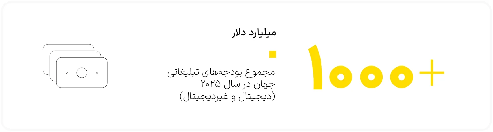
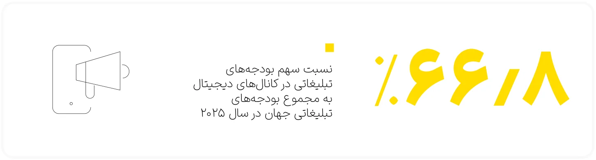
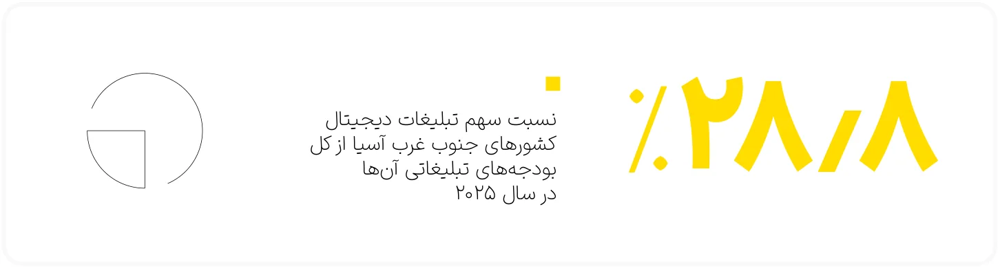
سال ۱۴۰۴ برای اقتصاد دیجیتال ایران سال آرامی نبود. جنگ ۱۲روزه، اعتراضات دی، جنگ ۳۹روزه و قطعیهای مکرر اینترنت، هر کدام برای مدتی رفتار کاربران و برنامههای بازاریابی کسبوکارها را تغییر دادند. با این حال، بازار تبلیغات دیجیتال پس از هر بحران به مسیر خود برگشت و در مقاطعی مانند ۷ آذر (بلکفرایدی) رکورد تازهای هم ثبت کرد.
در «روایت یکتانت از بازاریابی دیجیتال ایران در سال ۱۴۰۴ و بهار ۱۴۰۵» تلاش کردهایم در کنار تصویر کلی بازار نشان دهیم این صنعت در برابر شوکهای پیدرپی چه واکنشی داشت و تبلیغکنندگان، رسانهها و کاربران چهطور خود را با شرایط تازه تطبیق دادند. گزارش با وضعیت تبلیغات دیجیتال در جهان آغاز میشود و سپس بازار تبلیغات ایران را در وبسایتها، اپلیکیشنها، شبکههای اجتماعی، دیگر روشهای بازاریابی دیجیتال و تبلیغات محیطی و تلویزیونی بررسی میکند. پیمایش اختصاصی امسال هم با مشارکت ۹۵۹ نفر از سراسر کشور انجام شده است که علاوهبر عادتهای آنلاین مردم، اعتماد آنان به تبلیغات، رفتارشان در روزهای قطع اینترنت و استفادهآنان از ابزارهای هوش مصنوعی را سنجیده است.
گزارشی که در ادامه میخوانید را یکتانت با همکاری شرکت پژوهش بازار رسانه امروز (emrc)، مایکت، سیباپ، ادتریس، زلکا، روبیکا، بله، سروشپلاس، ادیوری، جریان، تریبون، فرستادز، نجوا و آیرسانه تدوین کرده است.
فصل ۰۱
تا پیش از این، بررسیها معطوف به چگونگی روند سهمگیری بازاریابی دیجیتال از بازاریابی سنتی بود و اینکه چگونه استراتژیها و بودجههای بازاریابی به تناسب توسعهزیست دیجیتال کاربران و ارایهخدمات آنلاین، بیشتر به سمت بازاریابی دیجیتال میآیند؛ حال در کنار این ارزیابیها باید نگاهی داشت به نقش فراگیر ابزارهای هوش مصنوعی که خود به زمینهای برای رشد و نتیجهگیری بهتر در این حوزه تبدیل شدهاند.
در این بخش، به این پرسشها پاسخ میدهیم:



نتایج پرسشنامه Global Entertainment & Media Outlook ۲۰۲۵–۲۰۲۸ که از سوی PwC UK و Omdia اجرا شده است، نشان میدهد بودجههای تبلیغاتی* در جهان (دیجیتال و غیردیجیتال) در سال ۲۰۲۵ از ۱۰۰۰میلیارد دلار فراتر رفتهاند؛ همچنین پیشبینی میکند، بودجههای تبلیغاتی سالهای پیش رو با شیب ملایمی بهشکل سالانه افزایش پیدا خواهند کرد.
* Advertising spending
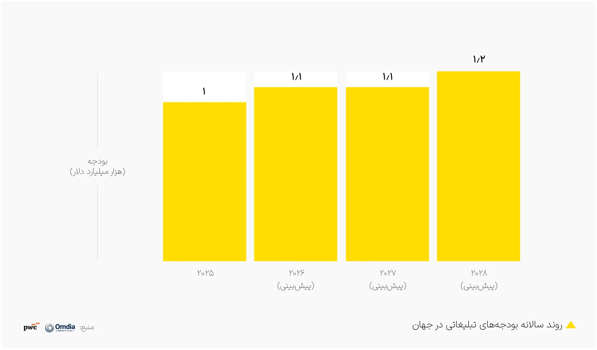
بودجههای تبلیغاتی خرجشده (دیجیتال و غیردیجیتال) در کشورهای گوناگون جهان در سال ۲۰۲۵ حدود ۸٫۴درصد نسبت به سال ۲۰۲۴ افزایش یافتهاند. در سال ۲۰۲۴ میزان افزایش بودجههای تبلیغاتی نسبت به ۲۰۲۳، ۱۰٫۴درصد بوده است.
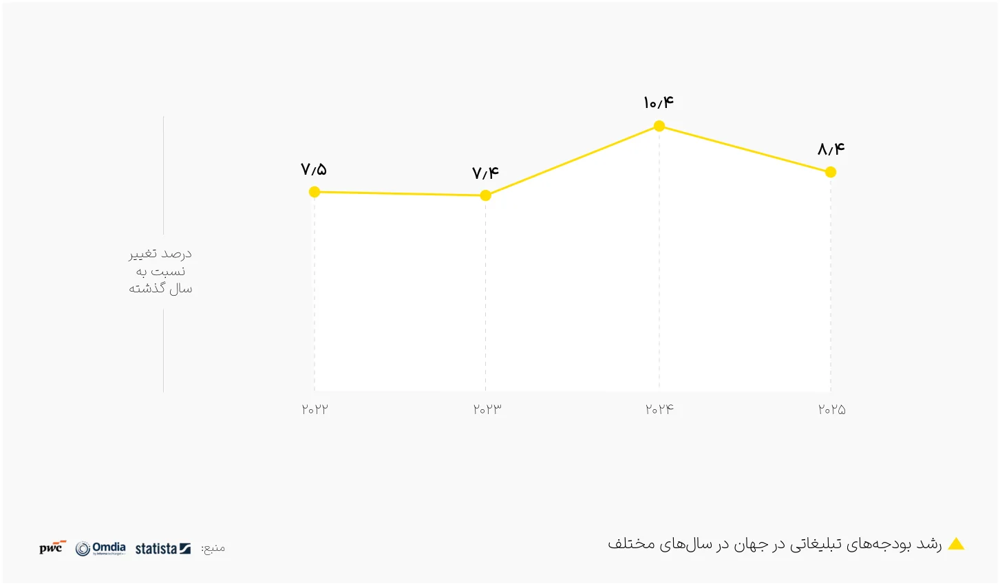
شبکه تبلیغاتی Dentsu در گزارشی که در دسامبر ۲۰۲۵ ارائه داده، پیشبینی کرده است بودجههای سالانه خرجشده در کانالهای دیجیتال* تا سال ۲۰۲۸ از ۸۰۰میلیارد دلار عبور خواهد کرد.
* Digital advertising expenditure
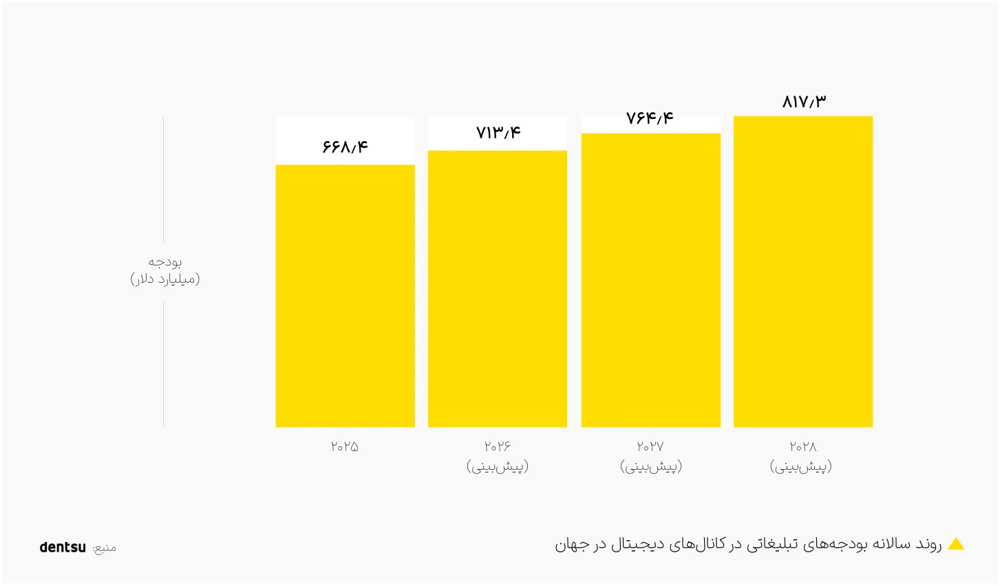
مشاهده تجمیعی دادههای Dentsu و Zenith در بررسی برنامههای تبلیغاتی در جهان نشان از افزایش تخصیص بودجههای تبلیغاتی به کانالهای دیجیتال دارد. همچنین بودجههای تبلیغاتی در کانالهای دیجیتال در سالهای آینده فاصله معناداری با کانالهای غیردیجیتال خواهد داشت.
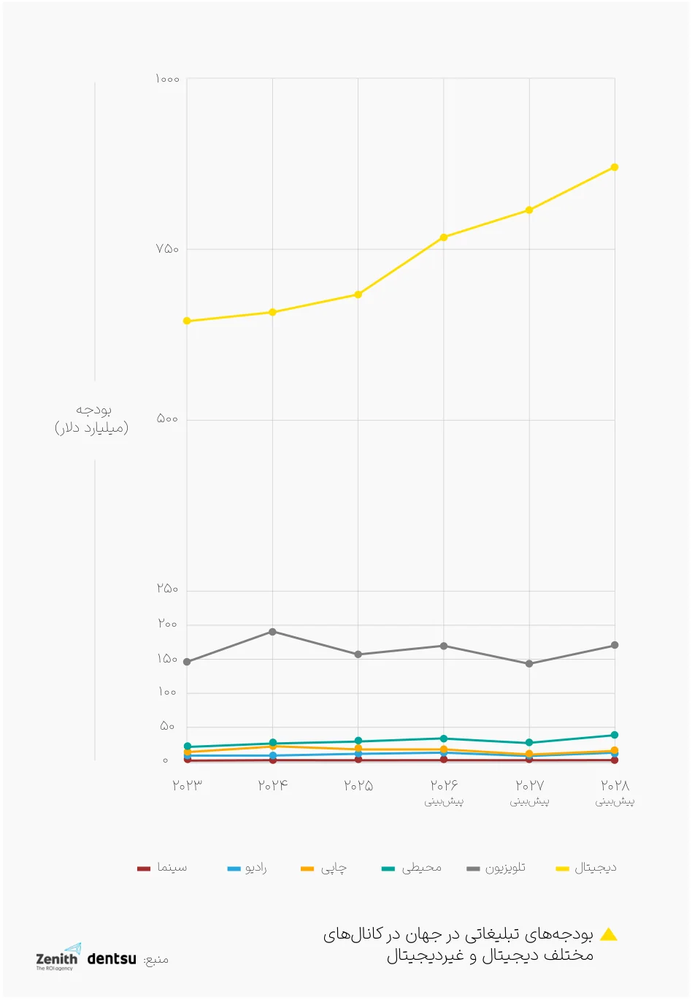
همراستا با افزایش بودجههای تبلیغات دیجیتال در جهان، در سال ۲۰۲۵ آمریکای شمالی با ۳۲۸میلیارد دلار و آسیا و اقیانوسیه با ۲۶۱میلیارد دلار، بیشترین سهم را از کل بودجه تبلیغات دیجیتال جهان داشتهاند.
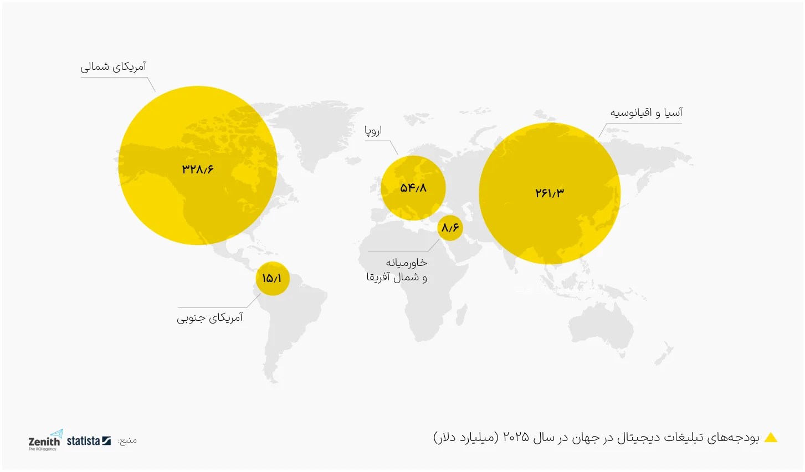
با بررسی بودجههای تبلیغات دیجیتال کشورهای مختلف در سال ۲۰۲۵ و مقایسه آنها با مقدار بودجههای این نوع تبلیغات در سال ۲۰۲۴، بیشترین افزایش بودجه تبلیغات دیجیتال به ترتیب به هند، ترکیه و اسپانیا مربوط میشود.
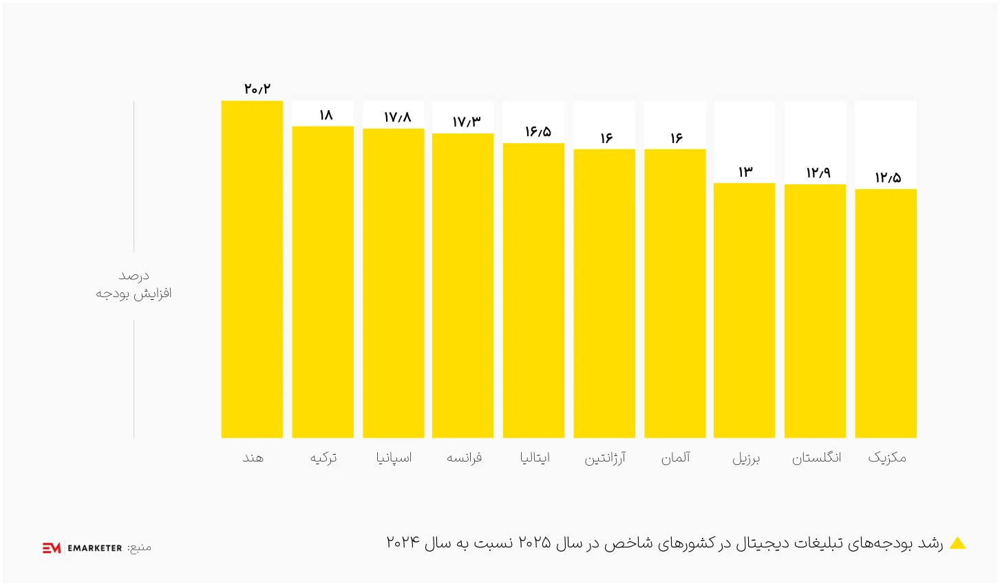
در میان نقاط مختلف منطقه آسیا و اقیانوسیه (Asia-Pacific) در سال ۲۰۲۵، کشورهای شرق آسیا ۵۲٫۵درصد از بودجههای تبلیغاتی خود را در کانالهای دیجیتال خرج کردهاند؛ درحالیکه سهم تبلیغات دیجیتال در منطقه جنوبغرب آسیا ۲۸٫۸درصد و در جنوب آسیا تنها ۱۹٫۶درصد است.
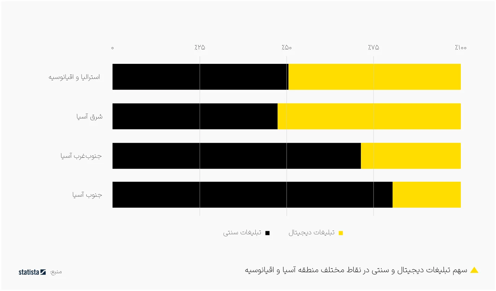
دادهها نشان میدهند که تبلیغات همچنان ستون اصلی مدل درآمدی گوگل است و بخش عمده این درآمد از «جستوجو» تامین میشود. درآمد تبلیغاتی از جستوجوی گوگل از ۶۹میلیارد دلار در ۲۰۱۷ به ۱۹۸٫۱ میلیارد دلار در ۲۰۲۴ رسیده است. در همین بازه، درآمد تبلیغات یوتیوب نیز از ۸٫۲میلیارد دلار به ۳۶٫۱میلیارد دلار رسیده است.
این در حالی است که درآمد حاصل از نمایش تبلیغات گوگل در سایتها، اپلیکیشنها و سایر ناشران، پس از رسیدن به حدود ۳۲٫۸ میلیارد دلار در ۲۰۲۲، به ۳۰٫۴میلیارد دلار در ۲۰۲۴ کاهش یافته است.
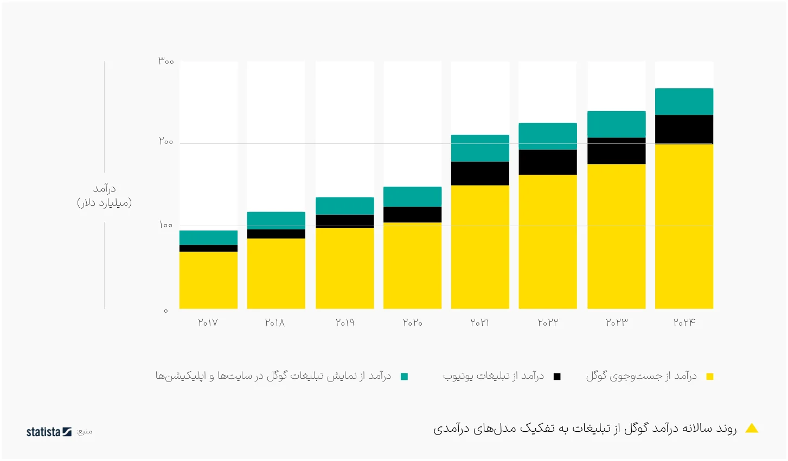
بر اساس نظرسنجی Basis Technologies که از سوی MarketingCharts در سال ۲۰۲۵ منتشر شد، تقریبا ۸۰درصد مدیران آژانسهای تبلیغاتی آمریکای شمالی بر این باورند که هوش مصنوعی مولد (Generative AI) تاثیر «مثبت» یا «تا حدودی مثبت» بر آژانسهای تبلیغاتی دارد.
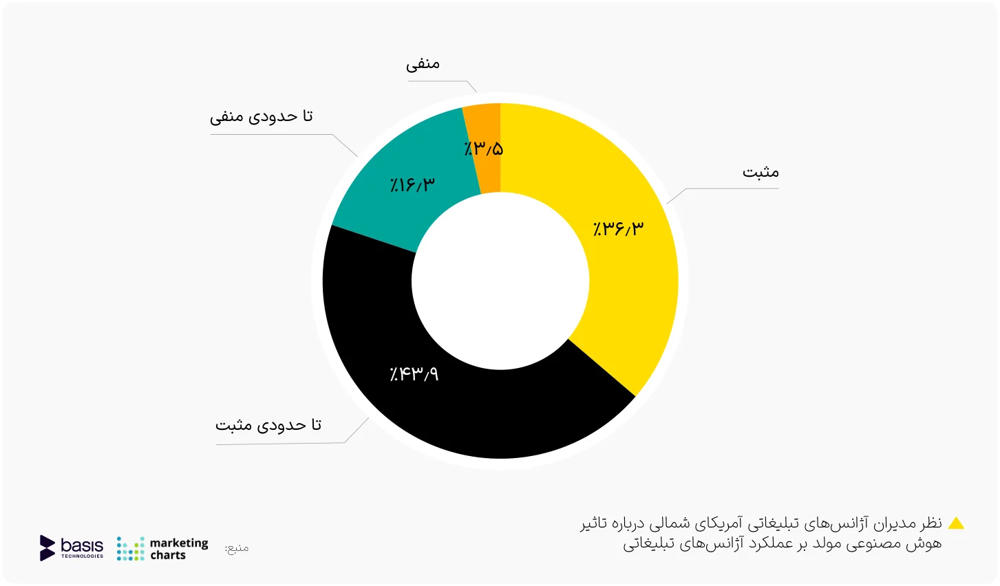
فصل ۰۲
مطالعه ردپای دیجیتال ایرانیان و عادات رسانهایشان میتواند بینشارزشمندی درباره رفتار آنان در اختیار علاقهمندان بازاریابی دیجیتال قرار دهد. به این منظور با همکاری شرکت پژوهش بازار رسانه امروز (emrc) یک مطالعه پیمایشی اختصاصی برای این گزارش انجام شده است که در آن ۹۵۹نفر از ایرانیان سراسر کشور مشارکت داشتهاند.
برای دستیابی به تصویری که تا حد امکان نماینده جامعه ایران باشد، نمونهگیری بهشکل تصادفی و با پوشش جغرافیایی شهرهای مختلف کشور انجام شده است. ترکیب نمونه پس از جمعآوری دادهها، بر اساس ویژگیهای جمعیتشناختی جامعه ایران وزندهی شده تا توزیع پاسخدهندگان از نظر متغیرهایی مانند جنسیت، سن و پراکندگی جغرافیایی با ساختار جمعیتی کشور همراستا شود. همچنین سهم پاسخدهندگان زن و مرد به شکل برابر در طراحی نمونه لحاظ شده و توزیع سنی نمونه متناسب با ساختار جمعیتی ایران تنظیم شده است.
بهمنظور دسترسی به طیف متنوعی از پاسخدهندگان، گردآوری دادهها به شکل تلفنی انجام شده است. بهعلاوه، حجم نمونه ۹۵۹نفر، در سطح اطمینان ۹۵درصد، امکان برآورد نتایج کلی با حاشیه خطایی حدود ۳٫۲درصد را فراهم میکند. بر این اساس، یافتههای این پیمایش میتواند تصویری معتبر از الگوهای کلی رفتار، نگرش و عادات دیجیتال جامعه ایران را ارائه دهد.
در این بخش به این سوالها پاسخ داده شده است که مردم ایران:
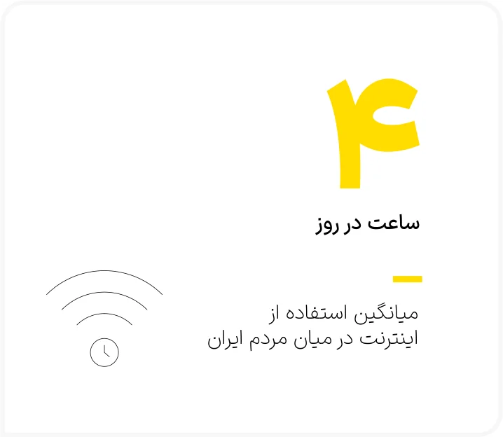
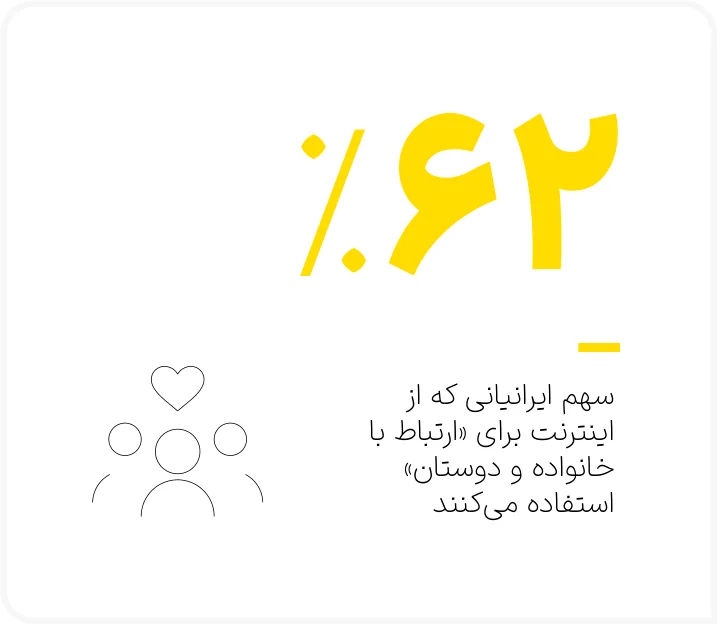
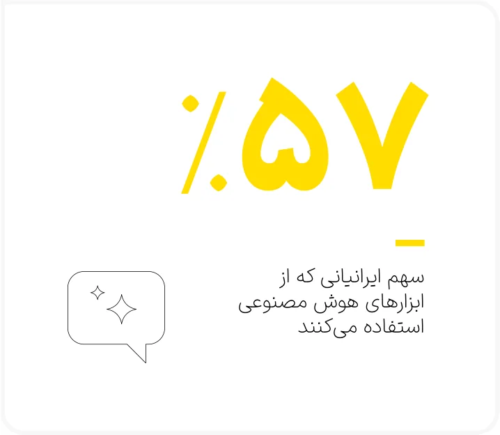
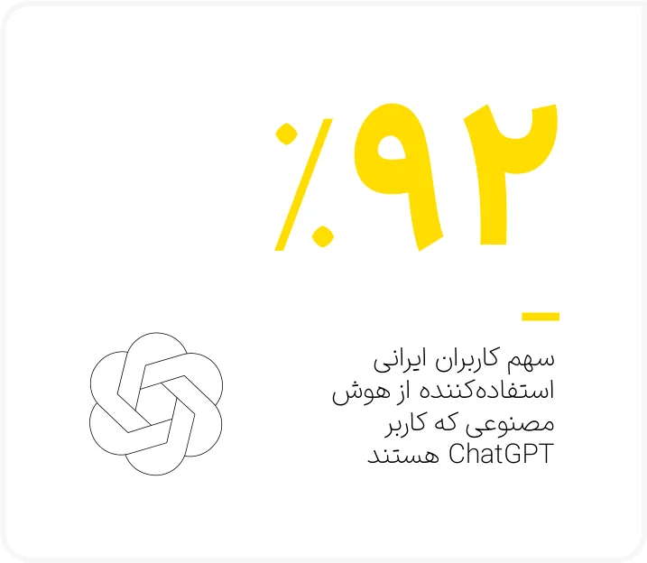
مدتزمان استفاده روزانه از اینترنت با بالارفتن سن کاهش پیدا میکند. ۴۳درصد از نسل Z* روزانه بیش از ۴ساعت از اینترنت استفاده میکنند؛ درحالیکه این سهم در نسل Y به ۳۴درصد و در نسل X به ۲۴درصد میرسد.
در مقابل، نزدیک به نیمی از نسل X کمتر از ۲ساعت در روز آنلاین هستند. این یافته نشان میدهد تفاوت اصلی میان نسلها دیگر در دسترسی به اینترنت نیست، بلکه در میزان حضور و شیوه استفاده از آن است.
* با توجه به اهمیت مطالعات نسلی در شناخت کاربران، پاسخدهندگان بر اساس گروههای سنی زیر تقسیمبندی شدهاند:
نسل Z: ترکیبگروههای سنی ۱۴ تا ۱۸ و ۱۹ تا ۲۷ سال نسل Y: ترکیب گروههای سنی ۲۸ تا ۳۶ و ٣۷ تا ۴۵ سال نسل X: ترکیب گروههای سنی ۴۶ تا ۵۴ و ۵۵ تا ۶۵ سال
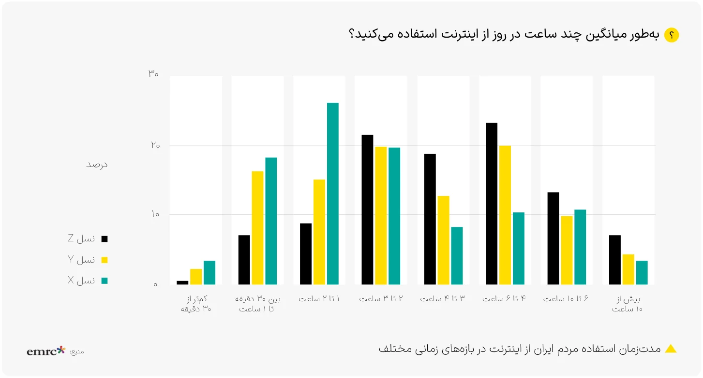
الگوی استفاده از اینترنت در نسلهای مختلف متفاوت است. نسل Z بیش از سایر نسلها اینترنت را برای تماشای فیلم، سریال و ویدیو (۷۳درصد)، گوش دادن به موسیقی (۶۸درصد) و وقتگذرانی (۶۶درصد) استفاده میکند و در استفاده از ابزارهای هوش مصنوعی نیز با ۶۰درصد، فاصله محسوسی با نسلهای Y و X دارد.
در مقابل، نسل X سهم بالاتری در کاربردهایی مانند ارتباط با خانواده و دوستان (۶۵درصد)، دنبال کردن اخبار (۶۴درصد) و خدمات بانکی (۶۲درصد) دارد؛ درحالیکه نسل Y در خرید اینترنتی (۶۲درصد) پیشتاز است.
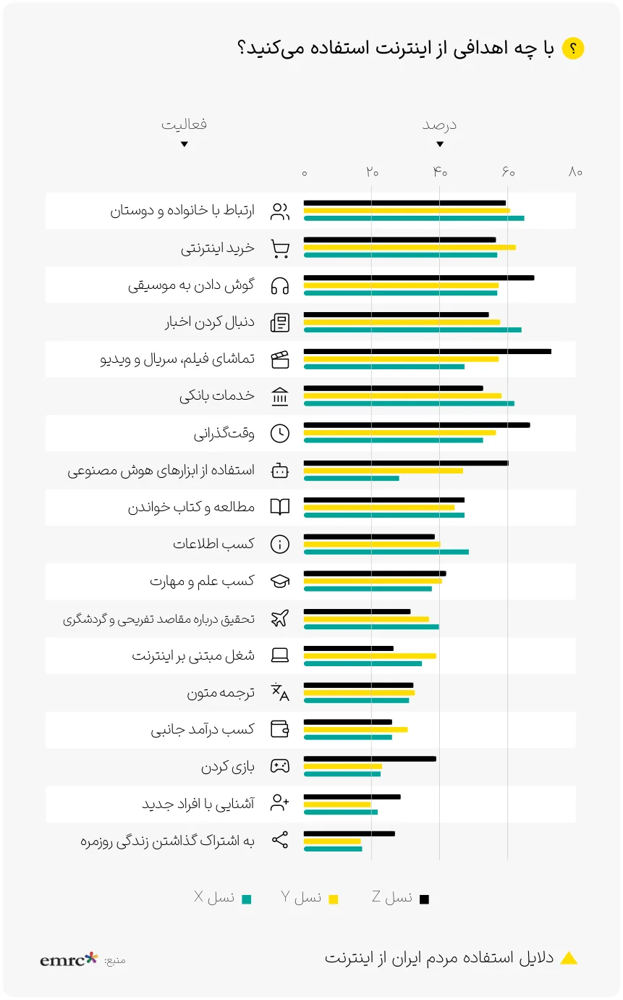
چک کردن شبکههای اجتماعی و پیامرسانها، اولین اقدام صبحگاهی بیش از ۴۰درصد از افراد هر سه نسل است؛ ۴۶درصد از نسل Z، ۴۵درصد از نسل Y و ۴۱درصد از نسل X روز خود را با این کار آغاز میکنند.
پس از آن، صرف صبحانه جایگاه پررنگتری نسبت به سایر فعالیتها در بین همه نسلها پیدا میکند؛ ۳۴درصد از نسل X در مقایسه با ۲۷درصد از نسل Y و ۲۳درصد از نسل Z، روز خود را با آماده کردن و خوردن صبحانه شروع میکنند. این تفاوت نشان میدهد که حضور دیجیتال در لحظات ابتدایی روز، رفتاری فراگیر و فراتر از مرزهای نسلی است.
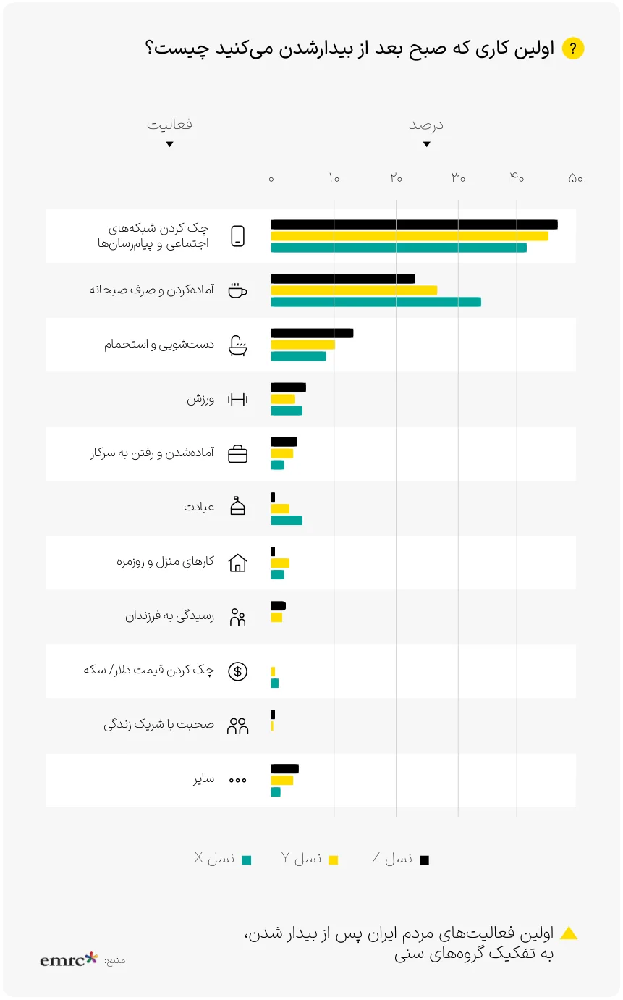
دایرکت اینستاگرام و روبیکا با ۸۱درصد استفاده در یک سال گذشته، بالاترین میزان استفاده را در میان پلتفرمهای بررسیشده دارند. پس از آن، واتساپ، تلگرام، ایتا و بله با فاصلهکمی از یکدیگر در رتبههای بعدی قرار دارند.
در سوی دیگر، شاد با ۲۵درصد، سروشپلاس با ۲۰درصد و دایرکت ایکس با تنها ۱۱درصد استفاده، فاصله قابلتوجهی با سایر پلتفرمها دارند. با این حال، در میان کاربران هر پلتفرم، شدت استفاده متفاوت است و دایرکت اینستاگرام با ۴۰درصد «استفاده زیاد»، بالاترین سهم کاربران پرمصرف را دارد.
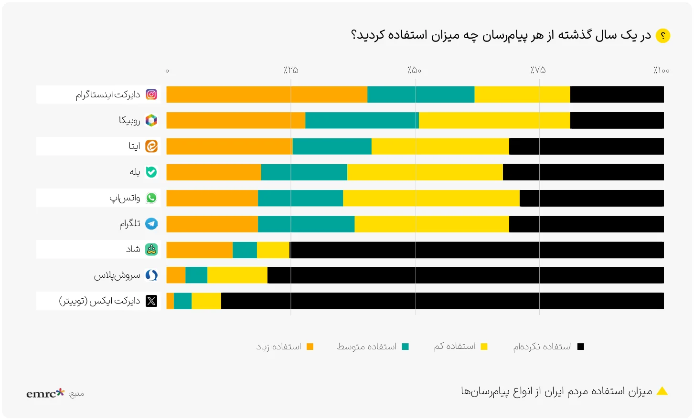
پیامرسانها با ۵۵درصد استفاده متوسط یا زیاد، مهمترین کانال برای دریافت اخبار هستند. پس از آن، سایتهای خبری با ۴۴درصد، دوستان و آشنایان با ۴۲درصد و تلویزیون با ۳۹درصد قرار دارند؛ ترکیبی که نشان میدهد دریافت اخبار همچنان میان رسانههای رسمی، پلتفرمهای دیجیتال و شبکه ارتباطی افراد توزیع شده است. در میان سایر موارد، اینستاگرام (با ۲۶درصد میزان استفاده بالاتر از متوسط) و دنبالکردن چهرههای فعال در فضای مجازی (۲۰درصد)، جایگاه بالاتری از شبکههای تلویزیونی غیرداخلی (۱۶درصد) و پیشنهادهای گوگل (۱۵درصد) دارند. در مقابل، کانالهایی مانند روزنامه (۳درصد) و ایکس (۲درصد) نقش بسیار محدودتری در مطالعه مستمر اخبار دارند.
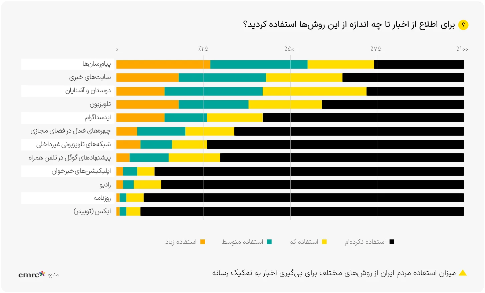
بیلبورد و تبلیغات محیطی با ۹۶درصد مواجهه، بیشترین میزان دیدهشدن را در میان مردم ایران دارد و پس از آن، تبلیغات داخل فروشگاهها با ۹۲درصد مواجهه در رتبه دوم قرار میگیرد. در رتبههای بعدی، پیامک با ۹۱درصد، تبلیغات روی وسایل نقلیه با ۹۰درصد و وبسایتها با ۸۶درصد مواجهه، کانالهایی هستند که بیشتر دیده شدهاند. در نقطه مقابل این طیف، پادکستها و رادیو با ۲۱ و ۱۹درصد مواجهه، کمترین میزان دیدهشدن را در میان پاسخدهندگان و فاصلهای چشمگیر با سایر رسانهها دارند.
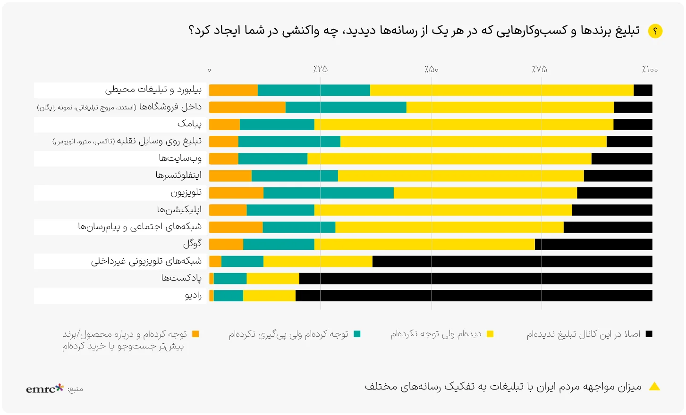
برای مقایسه اثرگذاری تبلیغات در رسانههای مختلف، واکنش مخاطبان به تبلیغات برندها در ۱۰رسانه از مرحله «مواجهه و دیدهشدن» تا «توجه» و در نهایت «پیگیری و اقدام» بررسی شده است.
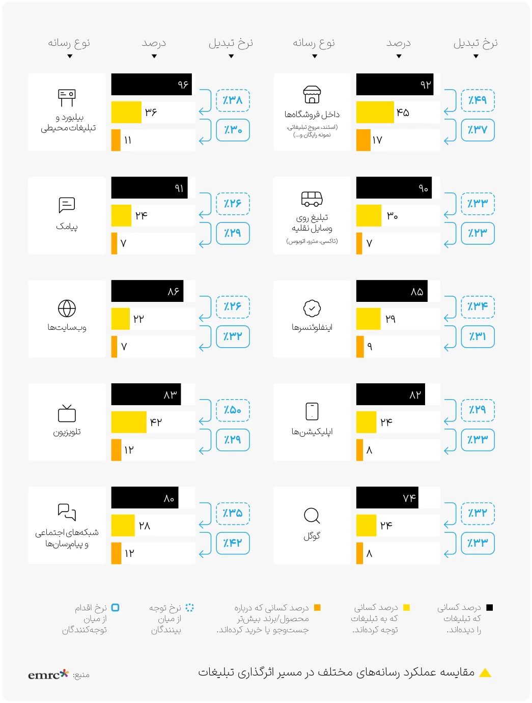
دادهها نشان میدهند «بیتفاوتی»، غالبترین واکنش مخاطبان به کانالهای تبلیغاتی است. در تمام کانالهای بررسیشده، سهم پاسخدهندگانی که هنوز نظر منفی شکل گرفتهشدهای اعلام نکردهاند از سهم بیاعتمادان بیشتر است.
حدود یکچهارم پاسخدهندگان به تبلیغات در تلویزیون و تبلیغات داخل فروشگاهها اعتماد دارند. حتی کانالهایی مانند رادیو و پادکست که کمترین سهم نظر منفی را دارند، عمدتا با بیتفاوتی مواجهاند تا مخالفت. این الگو نشان میدهد بیشتر مخاطبان، حتی نسبت به کانالهایی با کمترین امتیاز اعتماد هم ذهنیت منفی قطعی ندارند.
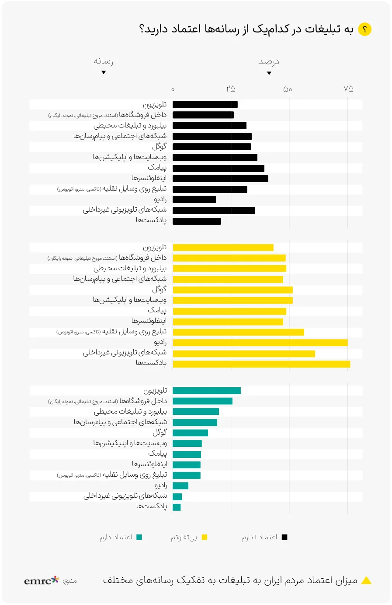
حدود ۶۰درصد از ایرانیان حداقل یکبار در ماه خرید آنلاین انجام میدهند و با افزایش سن، فاصله در میزان استفاده از خرید آنلاین بیشتر میشود. نسل X نسبت به دو نسل دیگر، سهم بالاتری از نداشتن خرید ماهانه دارند.
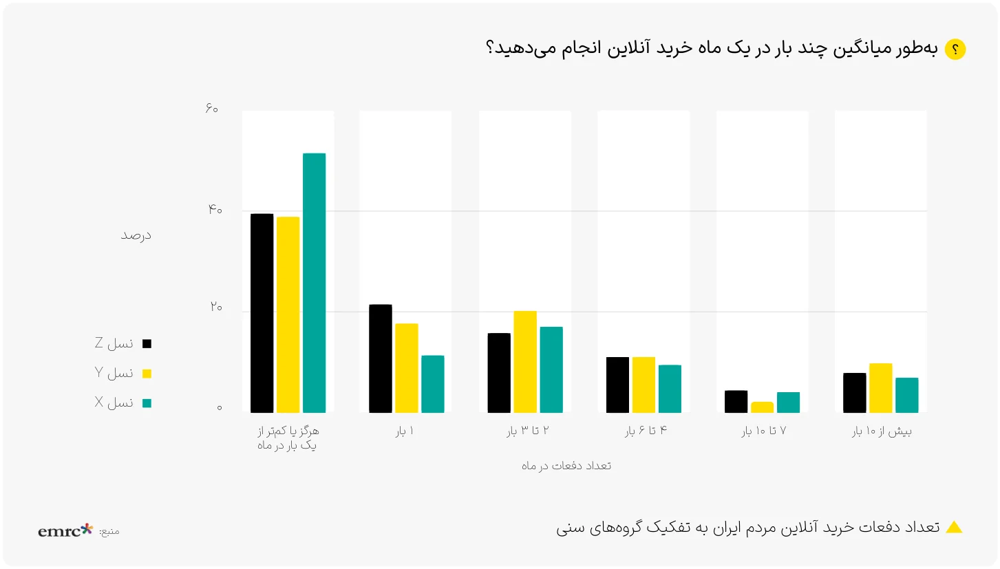
در دورههای قطع اینترنت، «گفتوگو با خانواده و دوستان»، «ورزش و پیادهروی» و «گشتوگذار در شهر» از رایجترین فعالیتهای جایگزین در بین همه افراد بوده است.
در بین نسل Z پس از این موارد «گوش دادن به موسیقی»، «تماشای فیلم» و «بازی کردن با موبایل»، در اولویت بوده، درحالیکه در نسل X و Y «آشپزی» نیز جزو موارد صدرنشین قرار داشته است.
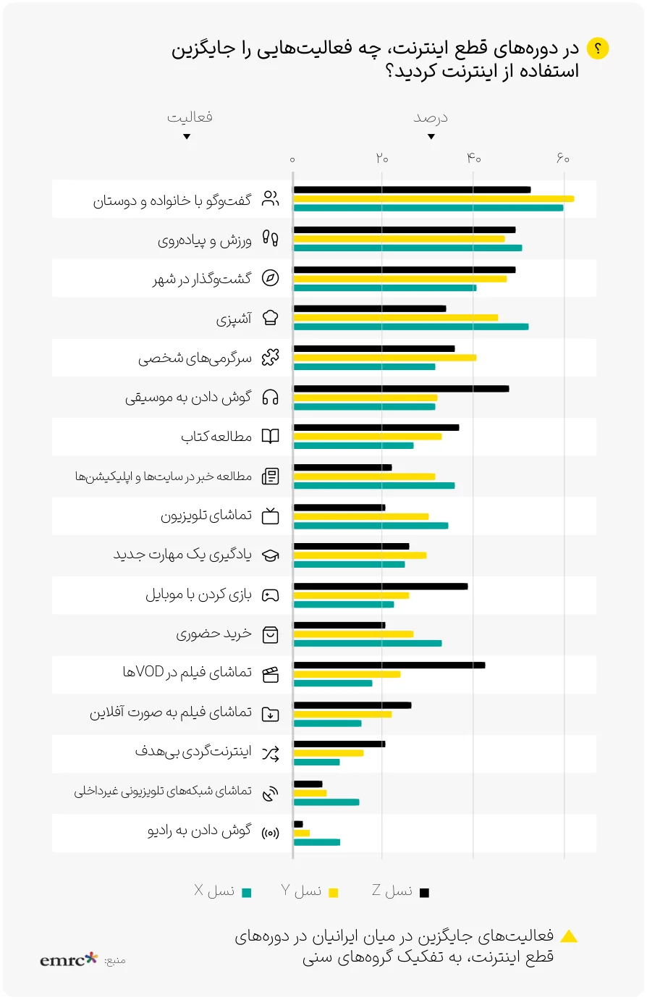
در دوران قطع اینترنت، تفاوت نسلی در شیوههای حفظ ارتباط با خانواده و دوستان مشهود است. نسل X و Y بیشتر به تماس تلفنی متکی بودهاند؛ ۷۰درصد از نسل X و ۶۲درصد از نسل Y از این روش استفاده کردهاند. در نسل Z اما ارتباط حضوری بیشترین میزان را داشته است.
این در حالی است که ۲درصد افراد گفتهاند که در این شرایط نتوانستهاند به هیچ طریقی با دوستان و خانوادهخود ارتباط برقرار کنند.
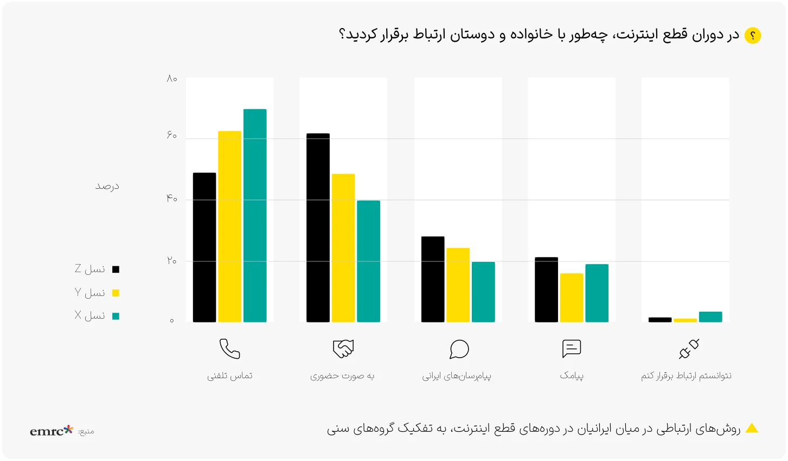
در دورههای قطع اینترنت، مهمترین تغییر در الگوی خرید، تاخیر یا انصراف از خرید بوده است که این رفتار در نسل Z با ۵۲درصد بیشتر از نسل Y و X دیده میشود.
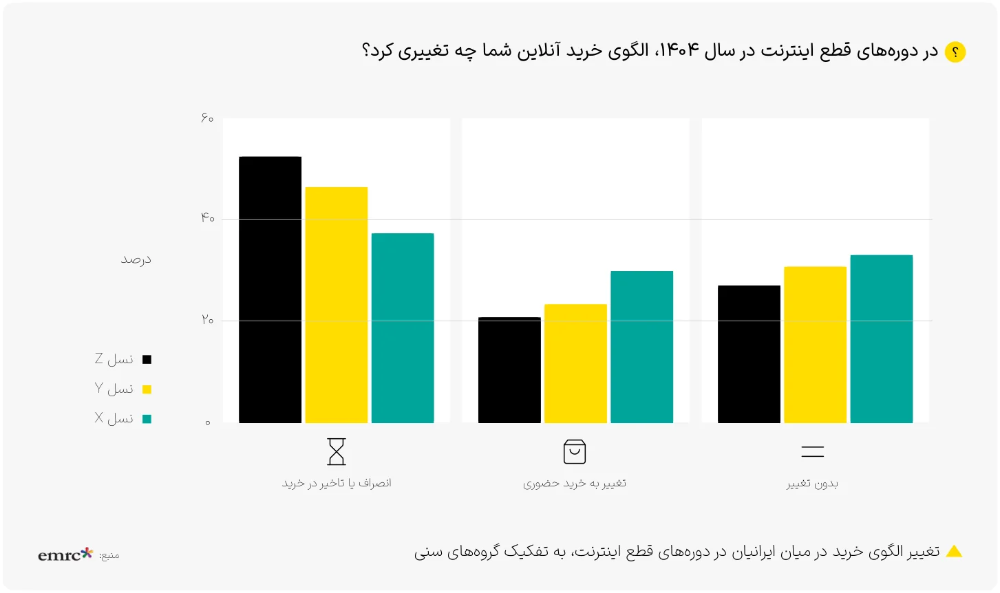
در شرایط بحرانی، تبلیغات دیجیتال برای بخش بزرگی از مخاطبان منجر به واکنش منفی نشده است. از میان افرادی که تبلیغی در این بازهها مشاهده کردهاند، ۶۰درصد از نسل X، ۴۷درصد از نسل Y و ۶۵درصد از نسل Z گفتهاند که مواجهه با تبلیغات برندها تفاوتی در واکنش آنها ایجاد نکرده است.
نگاه مثبت به حضور برند در شرایط سخت در هر سه نسل در رتبه دوم قرار گرفته است. با این حال، حدود یکچهارم مخاطبان واکنشی منفی یا انتقادی داشتهاند؛ بنابراین در دورههای بحرانی، حضور تبلیغاتی برند ذاتا مسئلهساز نیست، اما تناسب پیام و شیوه حضور با شرایط جامعه اهمیت ویژهای پیدا میکند.
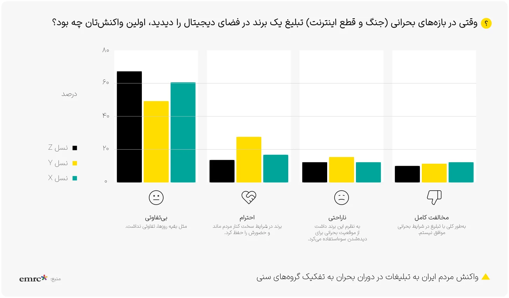
بررسی میزان استفاده از ابزارهای هوش مصنوعی نشان میدهد که شکاف نسلی در شیوه مواجهه با این فناوری معنادار است. در نسل Z تنها ۲۶درصد هرگز از ابزارهای هوش مصنوعی استفاده نکردهاند و ۳۸درصد بهطور مداوم و روزانه از آنها استفاده میکنند؛ در مقابل، در نسل X، ۴۹درصد هیچگاه از این ابزارها استفاده نکردهاند و تنها ۱۲درصد استفاده روزانه دارند. نسل Y نیز با ۴۲درصد عدم استفاده و ۱۹درصد استفاده روزانه، در میانه این دو نسل قرار میگیرد. بنابراین تفاوت اصلی میان نسلها نه در تجربه اولیه یا استفاده گاهبهگاه، بلکه در تبدیل هوش مصنوعی به بخشی از عادتهای روزمره است؛ الگویی که در نسل Z بهمراتب پررنگتر دیده میشود.
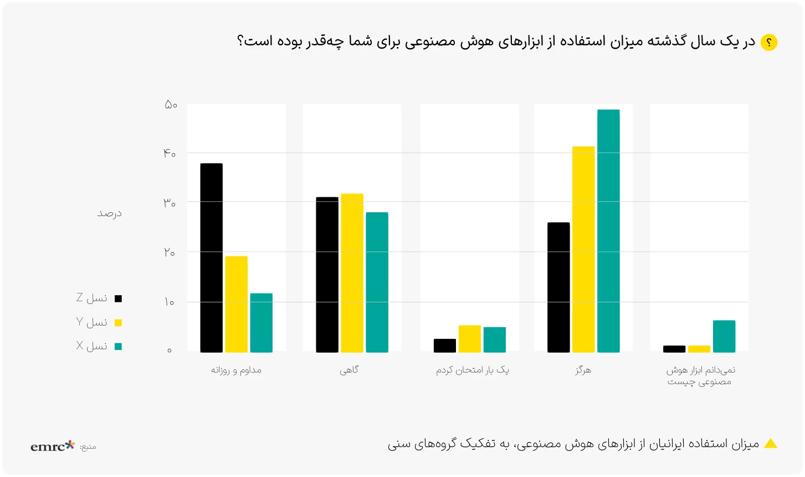
در یک سال گذشته، «کسب اطلاعات و یادگیری»، مهمترین کاربرد ابزارهای هوش مصنوعی در میان هر سه نسل بوده است؛ ۵۹درصد نسل Y، ۵۷درصد نسل Z و ۵۲درصد نسل X از هوش مصنوعی برای این منظور استفاده کردهاند. با این حال، تفاوت نسلها در نوع استفاده از این ابزارها آشکار است: نسل X و نسل Y بیشتر به سمت استفادههای کاربردی و حرفهای رفتهاند؛ بهطوریکه استفاده از هوش مصنوعی برای امور کاری در نسل Y به ۴۳درصد و در نسل X به ۳۹درصد میرسد و استفاده برای پرسشهای پزشکی و سلامت نیز در نسل X، ۴۸درصد است. در مقابل، نسل Z دامنه استفاده متنوعتر و شخصیتری دارد. در مجموع، به نظر میرسد هوش مصنوعی برای نسلهای مختلف بیشازآنکه یک ابزار با کاربرد واحد باشد، متناسب با نیازها و سبک زندگی هر نسل به شکل متفاوتی در حال تبدیلشدن به دستیار روزمره، حرفهای و شخصی است.
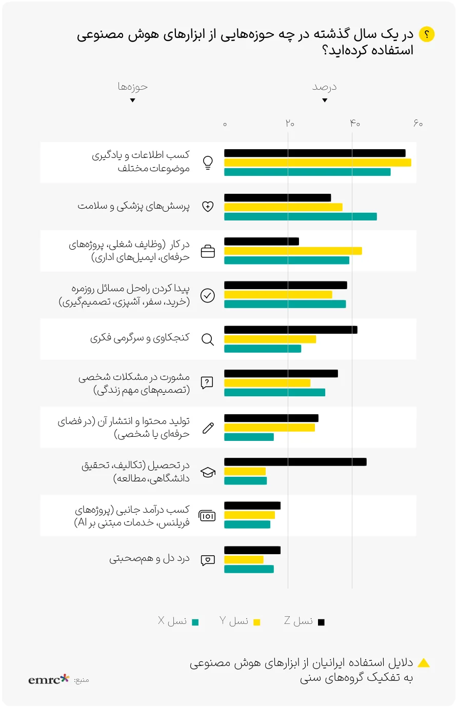
در استفاده از ابزارهای هوش مصنوعی، چتجیپیتی با فاصله زیادی، ابزار غالب کاربران است؛ ۹۲درصد کاربران حداقل گاهی از آن استفاده کردهاند و ۳۴درصد نیز استفاده زیادی داشتهاند. پس از آن، جمنای با ۱۹درصد، دستیار بله با ۱۷درصد و گپ جیپیتی با ۱۶درصد قرار دارند، در حالی که سایر ابزارها میزان استفاده بسیار پایینتری دارند.
این الگو نشان میدهد که با وجود امکان استفاده همزمان از چند ابزار، چتجیپیتی جایگاه غالب و کمرقیبی در میان کاربران ایرانی دارد و استفاده از سایر ابزارها عمدتا در سطح محدود و مکمل است.
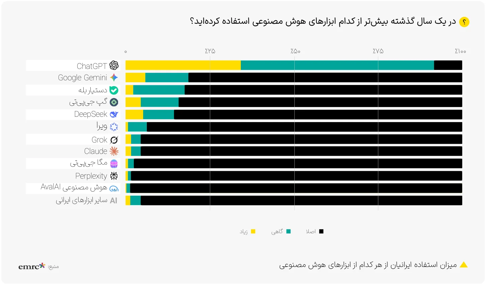
در یک سال گذشته، ۸۶درصد از پاسخدهندگان هیچ هزینهای برای تهیه اکانتهای هوش مصنوعی نکردهاند و تنها ۱۴درصد تجربه پرداخت داشتهاند. در میان سطوح مختلف هزینه نیز سهم کاربران بهطور محسوسی کاهش مییابد و تنها ۲درصد بیش از ۲میلیون تومان در ماه هزینه کردهاند. در مقایسه نسلهای مختلف، تفاوت قابلتوجه و معناداری مشاهده نمیشود؛ بنابراین میتوان گفت تمایل به استفاده رایگان از ابزارهای هوش مصنوعی، الگویی فراگیر و مستقل از نسلهاست.
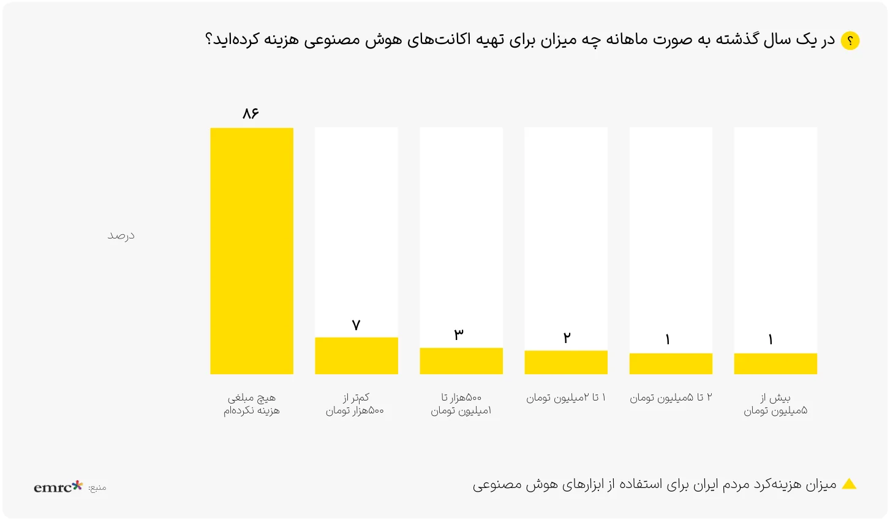
بیشترین استفاده تخصصی نسل Z، در زمینه «یادگیری و آموزش» و سپس «جستوجوی اطلاعات» است؛ درحالیکه «جستوجوی اطلاعات» در نسل Y و X بیشترین کاربرد را در یک سال گذشته داشتهاست.
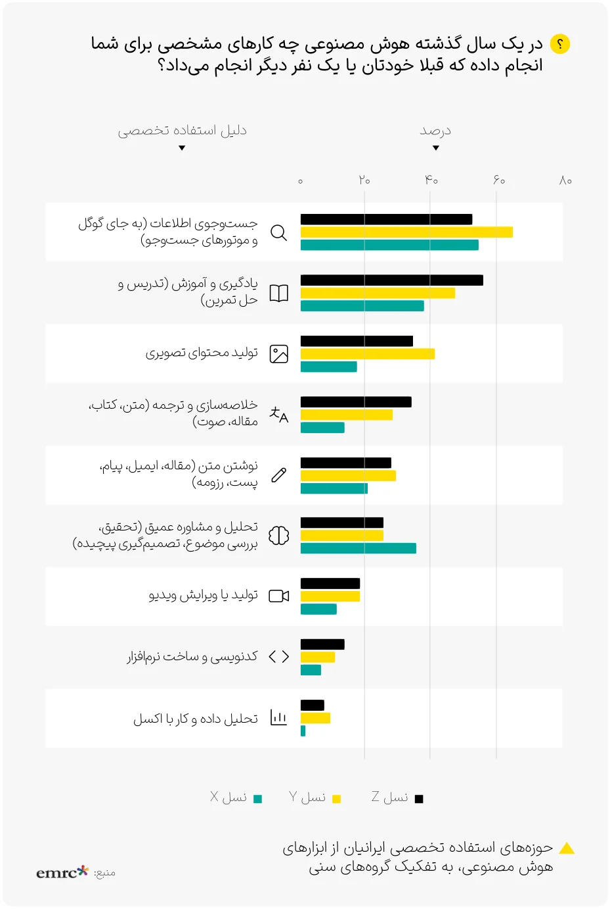
در این داده، تفاوت نسلی بیشتر در میزان بلوغ استفاده از هوش مصنوعی دیده میشود: نسل Z با ۴۲درصد، بیش از سایر نسلها سطح فعلی استفاده را کافی میداند، در حالی که در نسل X، ۲۸درصد هنوز استفاده نکردهاند و قصدی هم برای استفاده ندارند؛ بااینحال، ۲۶درصد از نسل X گفتهاند میخواهند در سال آینده شروع کنند. در نسل Y نیز ۲۰درصد در آستانه ورود قرار دارند.
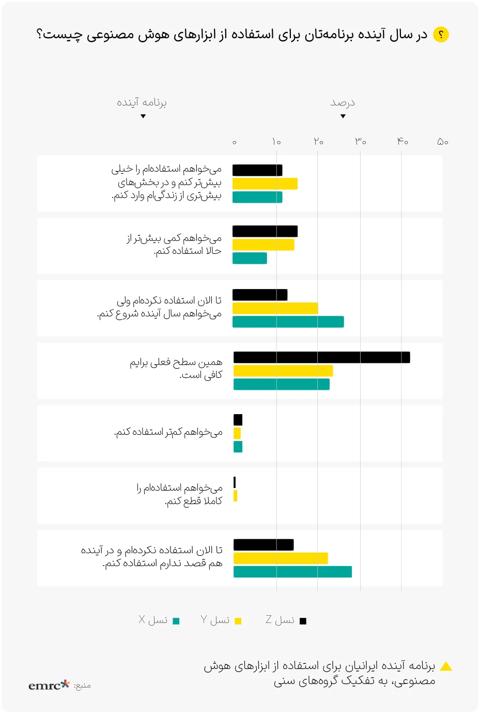
فصل ۰۳
سال ۱۴۰۴ سالی پرنوسان برای بازار تبلیغات دیجیتال ایران بود. جنگ ۱۲روزه در خرداد، اعتراضات دیو جنگ ۳۹روزهای که از اسفند آغاز شد، هر کدام بهنوبه خود رفتار کاربران و روند فعالیت کسبوکارها را دستخوش تغییر کردند و قطعیهای مکرر اینترنت در این بازهها فشار مضاعفی به کسبوکارهای دیجیتال وارد کرد. اما تصویر این ایام، فقط افت و توقف نبود. در کنار این دورههای دشوار، بازار تبلیغات دیجیتال ایران بازههایی با رونق قابلتوجه را هم پشت سر گذاشت. ۷ آذر ۱۴۰۴ (بلکفرایدی) نمونهروشنی از این موضوع بود؛ بازهای که با وجود شرایط عمومی اقتصاد، بخش قابلتوجهی از کسبوکارها یکی از پررونقترین دورههای فروش سال را تجربه کردند. در این فصل با استفاده از دادههای یکتانت روندهایی را بررسی میکنیم که مستقیما از این نوسانهای سال تاثیر پذیرفتهاند:
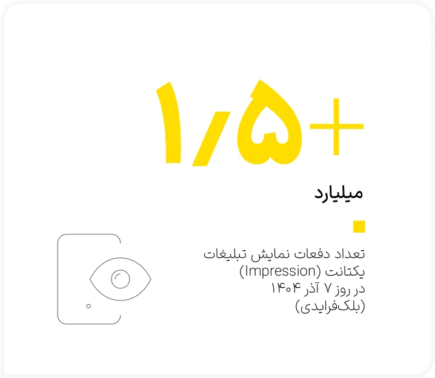
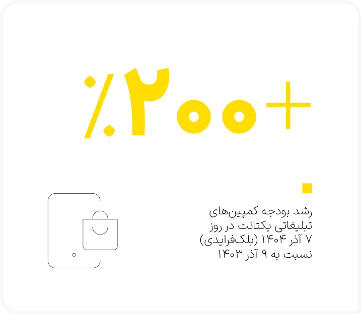
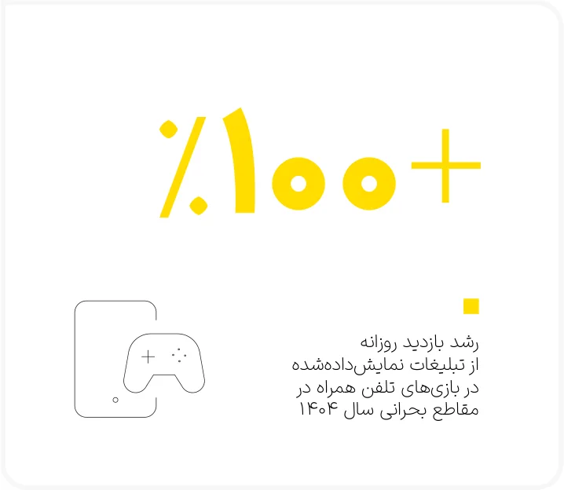
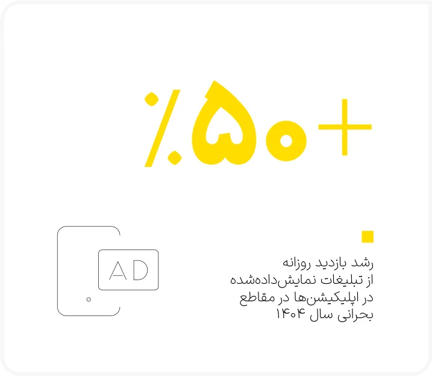
بازدید از صفحات وبسایتهای فارسی در ۱۵ماه گذشته با فراز و فرودهای قابلتوجهی همراه بود. بررسی روند روزانه تغییر بازدید از وبسایتها نشاندهنده افت شدید در بازههای جنگ ۱۲روزه، دی ۱۴۰۴ و جنگ ۳۹روزه است.
شدیدترین افت این بازه یکساله در دیرخ داد، جایی که بازدید تا حدود یکپنجم میزان پیش از قطع اینترنت کاهش یافت. با این حال، بازگشت به سطح پیش از بحران نسبتا سریع بود و پس از وصلشدن اینترنت، طی حدود سه هفته اتفاق افتاد.
جنگ ۳۹روزه با وجود طول مدت بیشتر، الگوی مشابهی را طی کرد، بازدید در حدود نیمی از سطح پایه افت کرد و طی چند هفته پس از فروکشکردن بحران، بهتدریج به محدوده پیش از بحران بازگشت.
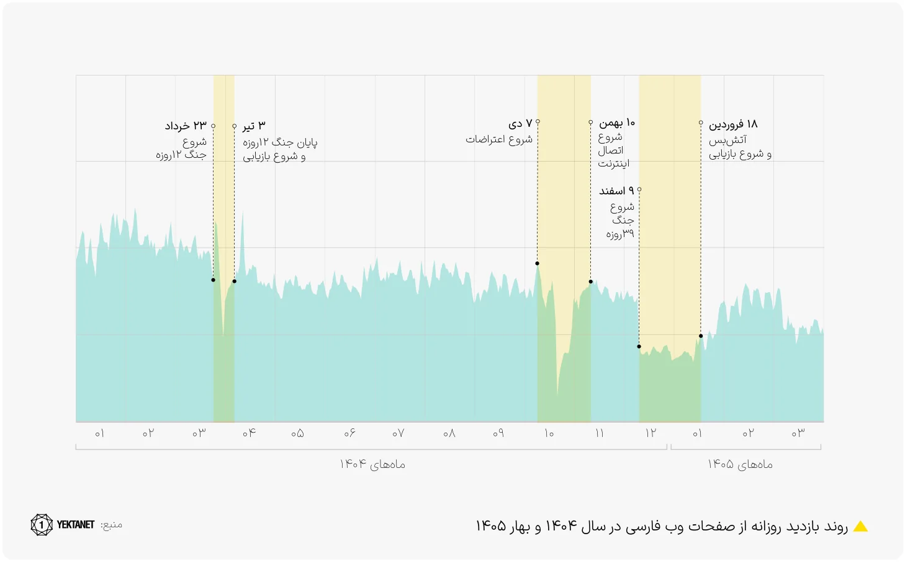
بررسی روند دوساله تعداد کلیکهای ماهانه تبلیغات نمایشی در وبسایتهای فارسی نشان میدهد این شاخص در بیشتر بازه مورد بررسی در یک دامنه نسبتا پایدار نوسان داشته و با افتوخیزهای فصلی معمول همراه بوده است.
این شاخص که در آذر ۱۴۰۴ به بالاترین میزان خود در دو سال اخیر رسیده بود، در اسفند ۱۴۰۴ همزمان با آغاز جنگ ۳۹روزه و قطع سراسری اینترنت، به شکل محسوسی افت کرد. این افت در فروردین ۱۴۰۵ ادامه یافت و تعداد کلیکها به کمترین میزان در کل بازه بررسیشده رسید که میتواند نشانهای از تاثیر مستقیم محدودیتهای ناشی از قطع اینترنت و جنگ بر رفتار کاربران و عملکرد پلتفرمهای تبلیغاتی باشد.
اما به رغم این مشکلات، روند صعودی این شاخص پس از آتشبس و اتصال مجدد اینترنت مشهود است.
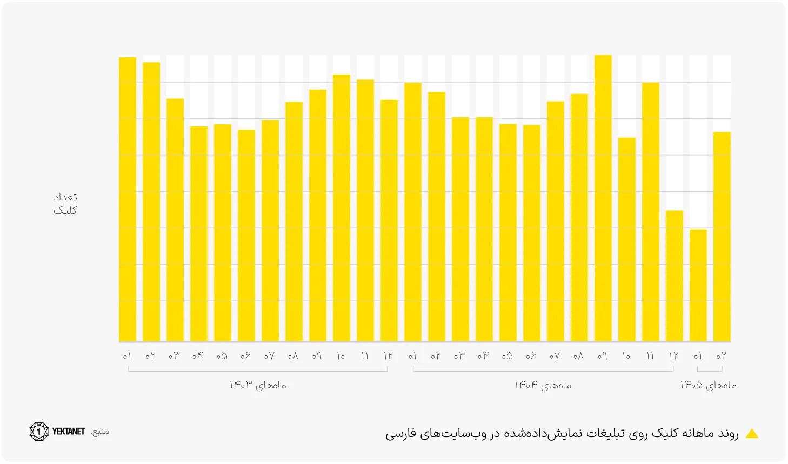
روند CPC تبلیغات وب در یکتانت از ابتدای سال ۱۴۰۳ تا خرداد ۱۴۰۵ نشان میدهد هزینه تبلیغات در وبسایتهای فارسی در مجموع روندی افزایشی داشته است. با این حال، با وقوع جنگ ۱۲روزه، این شاخص کاهش قابلتوجهی داشت و بهطور میانگین تا ۴۶درصد افت کرد.
این شاخص طی پنج ماه بعد، تا آذر ۱۴۰۴ و همزمان با کمپینهای بلکفرایدی، حدود ۸۴درصد افزایش یافت و به بالاترین سطح کل دوره رسید؛ این رشد ناشی از افزایش تقاضای کسبوکارها برای جایگاههای تبلیغاتی در این بازه است. با پایان بازه کمپینها و به دنبال آن دو بحران اعتراضات دیو جنگ ۳۹روزه، این شاخص دوباره روند کاهشی به خود گرفت و در مجموع حدود ۳۵درصد نسبت به میانگین سالانه افت کرد. پس از آتشبس و تا خرداد ۱۴۰۵، CPC حدود ۶۶درصد افزایش یافت. الگوی بازگشت پس از این دو دوره افت، نشان میدهد شوکهای وارد بر CPC در هر دو مورد مقطعی بودهاند؛ با بازگشت تقاضای کسبوکارها برای تبلیغ، شاخص پس از هر افت به سطح نزدیک به اوج پیش از بحران بازگشته و روند کاهش، پایدار نبوده است.
*منظور از CPC (Cost Per Click) هزینه بهازای هر کلیک است.
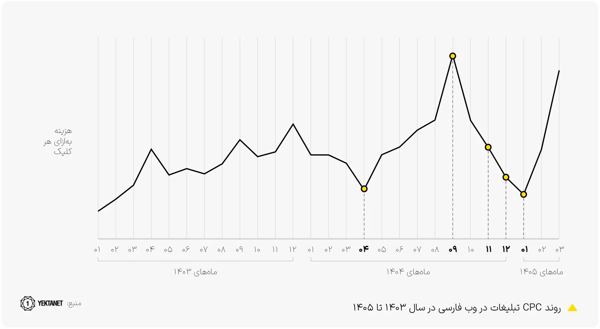
با قطع اینترنت در دی و اسفند ۱۴۰۴، ترافیک کاربران ایرانی از شبکههای اجتماعی خارجی و نیز وبسایتها به اپلیکیشنهای داخلی سرازیر شد و در هر دو بازهاین قطعیها (دیو جنگ ٣٩روزه) ترافیک اپلیکیشنهای نمایشدهنده تبلیغ تا ۵۰درصد افزایش یافت.
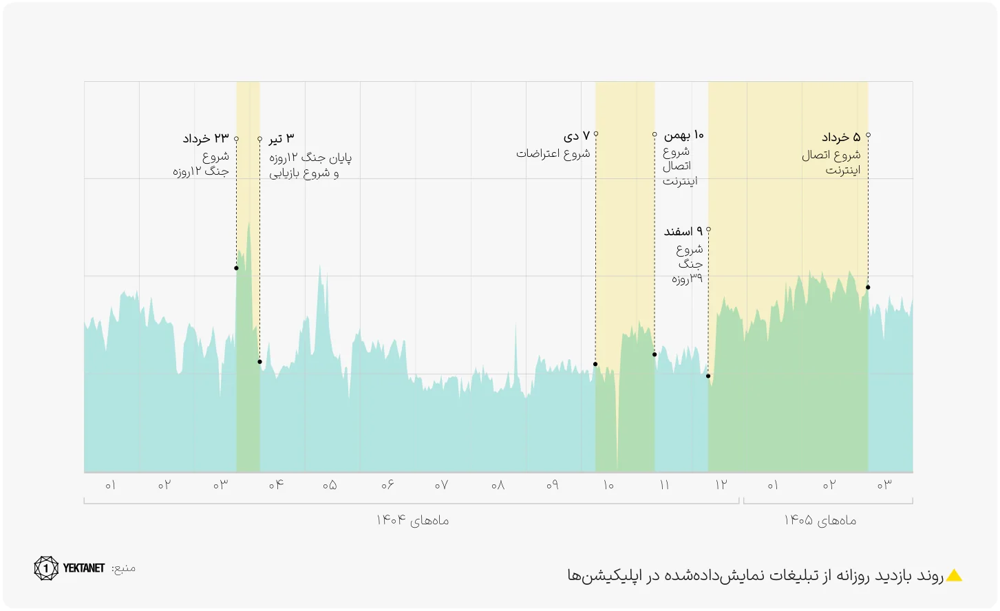
با بررسی روند بازدید روزانه از تبلیغات نمایشدادهشده در بازیهای تلفن همراه، بهنظر میرسد که با قطع اینترنت و در نبود شبکههای اجتماعی جهانی، کاربران به ناچار خود را با بازیهای تلفن همراه سرگرم میکنند و این موضوع سبب شده تا در هر سه مقطع بحرانی سال گذشته، استفاده از بازیهای تلفن همراه تا بیش از ۲برابر نیز افزایش یابد.
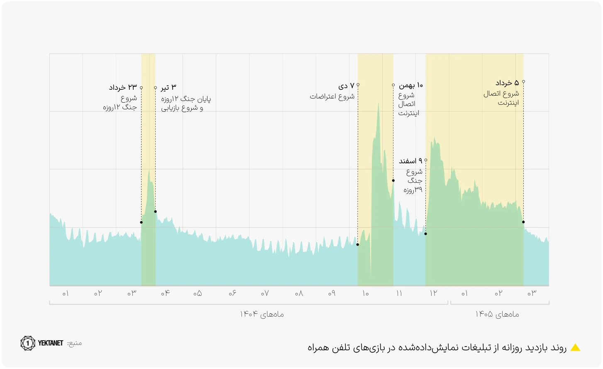
سال ۱۴۰۴، سال پرفرازوفرودی برای بازار تبلیغات دیجیتال در ایران بود. بحرانهای متعدد این سال و قطع مکرر اینترنت باعث شد تا برندها و تبلیغکنندگان نتوانند کمپینهای تبلیغاتی خود را به خوبی اجرا کنند. روند هزینهکرد بودجههای تبلیغاتی در کانالهای دیجیتال با جنگ ١٢روزه افت کرد، در آذر (بلکفرایدی) رکورد زد و پس از قطع اینترنت در دی، شاهد کمترین مقدار کل سال بود. کاهش بودجه تبلیغاتی در اسفند و پس از آغاز دوباره جنگ نیز اتفاق افتاد و درنهایت پس از آتشبس در ١٨فروردین، دوره بازیابی بودجهها شروع شد.
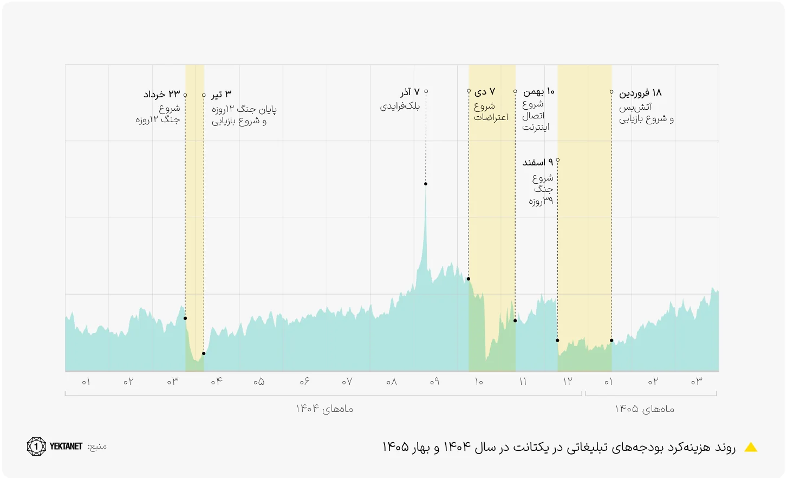
علیرغم بحرانهایی که در سال ۱۴۰۴ بر اقتصاد دیجیتال ایران سایه انداخت، نیاز کسبوکارها به تبلیغات پابرجا ماند. تعداد تبلیغکنندگان فعال* در ۹ ماه از ۱۲ماه سال، نسبت به مدت مشابه سال قبل، رشدی بین ۷ تا ۴۷درصد را تجربه کرد و میانگین ماهانه آن در کل سال حدود ۱۵درصد بالاتر از سال ۱۴۰۳ بود. کمترین رشد این بازه به تیر و روزهای پس از جنگ ۱۲روزه تعلق دارد، اما حتی در همین ماه تعداد تبلیغکنندگان فعال از تیر سال قبل بیشتر بود و در مرداد از سطح پیش از جنگ نیز فراتر رفت.
در دی و بهمن، تعداد تبلیغکنندگان فعال تقریبا در سطح سال قبل باقی ماند. افت محسوس تنها در اسفند دیده میشود، با اینحال حتی در این ماه نیز شمار تبلیغکنندگان فعال از ماههای فروردین و تیر همین سال بیشتر بود. این الگو میتواند نشانه آن باشد که کسبوکارهای ایرانی در دورههای بحران، فعالیت تبلیغاتی خود را با احتیاط بیشتر ادامه میدهند و پس از فروکش کردن بحران، بهسرعت به مسیر تبلیغات بازمیگردند.
*تبلیغکنندهای که در هر ماه بیشاز ۵۰میلیون تومان برای تبلیغات در یکتانت هزینه کرده باشد.
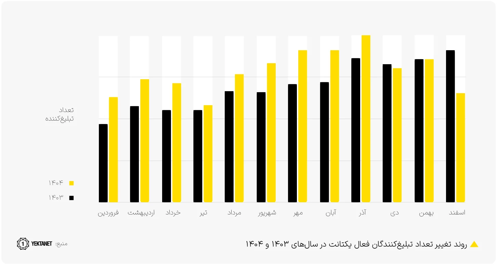
بررسی بودجههای تبلیغاتی خرجشده در ماههای متناظر دو سال ۱۴۰۴ و ۱۴۰۳ نشان میدهد که رشد نقطهبهنقطه این بودجههای تبلیغاتی در همه ماههای سال ۱۴۰۴ به جز چهار ماه بحرانی (تیر و سه ماه زمستان) سهرقمیبوده است. رشد بودجهها در ماههای تیر، دی و بهمن بسیار کمتر از سایر ماهها بوده و در اسفند، شاهد افت نقطهبهنقطه بودجههای تبلیغاتی به مقدار ٣٢درصد بودهایم.
از حیث عدد مطلق بودجههای تبلیغاتی، آذر ۱۴۰۴ بهدلیل کمپینهای متعدد از جمله کمپین بلکفرایدی، شاهد بیشترین میزان ریالی بودجههای خرجشده بوده است.
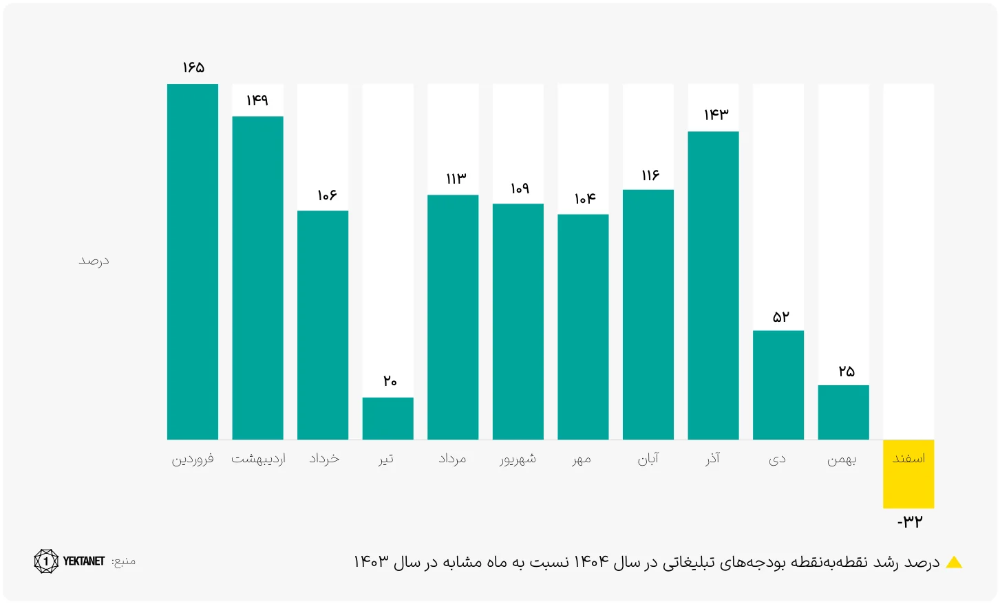
بررسی روند خرجکرد بودجههای تبلیغاتی در کانالهای دیجیتال در سال ۱۴۰۴، نشاندهنده افت شدید در سه بازه مهم بحرانی (جنگ ١٢روزه، اعتراضات دی و جنگ ٣٩روزه) است. جدول زیر خلاصهای از مقدار افت بودجههای تبلیغاتی در هر بازه بحرانی و نیز مدتزمان سپریشده تا بازگشت به وضع عادی در خرجکرد بودجهها را نشان میدهد. منظور از بازگشت به وضع عادی رسیدن به ۸۰درصد از میانگین یکهفته منتهی به شروع بحران است.
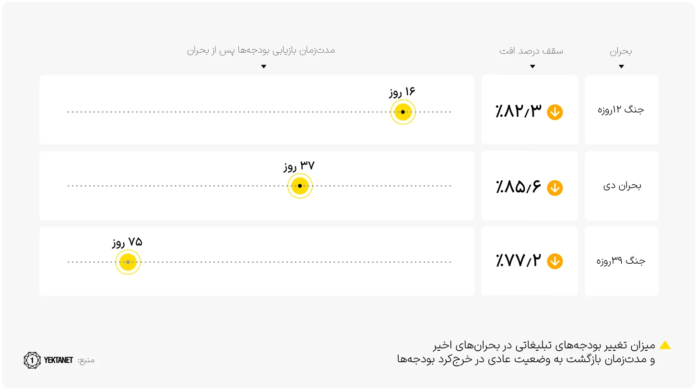
میزان تغییرات ظرفیتبسترهای نمایش تبلیغات در وبسایتها و اپلیکیشنها نشان میدهد که اعمال محدودیتهای شدید و قطع اینترنت بیشترین تاثیر را بر وبسایتها و اپلیکیشنهای خارجی داشته است، بهگونهای که میتوان گفت اپلیکیشنهای خارجی تقریبا خاموش بودهاند. آمارها نشان میدهد بیشترین بازهاین تاثیر مربوط به دی است.
در نقطهمقابل، اپلیکیشنها و پیامرسانهای داخلی با رشد قابلتوجهی مواجه بودند.
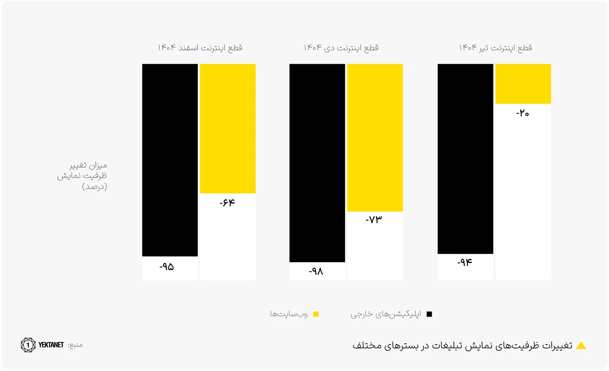
دادهها نشان میدهند در مقایسهدو بازهزمانی پیش و پس از جنگ، ظرفیت نمایش تبلیغات در اپلیکیشنها افزایش یافت؛ درحالیکه این ظرفیت در وبسایتها افت قابلتوجهی داشت. حدود ۸۱درصد وبسایتها علاوهبراینکه با افت ظرفیت نمایش رو بهرو شدند، نتوانستند حجم نمایش از دسترفتهرا بازیابی کنند. در مقابل ۶۸درصد اپلیکیشنها افزایش ظرفیت را تجربه کردند که از میان آنها ۴۷درصد کل اپلیکیشنها پس از دوره بازیابی نیز همچنان در سطح بالاتر از دوره پیش جنگ باقی ماندند.
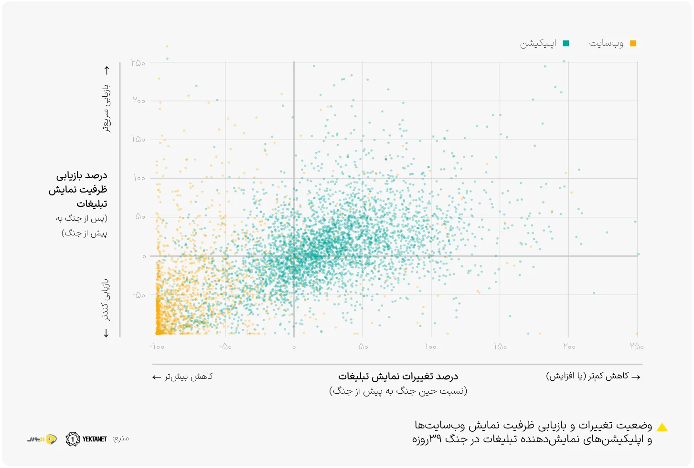
صنایعی که حین جنگ نسبت به پیش از جنگ بودجههای تبلیغاتیشان را بیش از سایرین کاهش دادند شامل «لوازم خانگی»، «سلامت و پزشکی»، «فروشگاههای لوازم آرایشی و بهداشتی» و «محصولات سوپرمارکتی» بودند. درحالیکه «بیمه آنلاین» بیشترین رشد هزینهکرد بودجه تبلیغات را تجربه کرد.
در کنار «بیمه آنلاین» ، «محصولات سوپرمارکتی» و «خدمات مخابراتی و اینترنتی» سریعترین بازیابی نسبت به پیش از جنگ را داشتند.
اندازه بازار تبلیغات دیجیتال ایران در سال ۱۴۰۴ حدود ۳۲٫۲ هزار میلیارد تومان برآورد میشود. شبکههای اجتماعی با ۱۰ هزار میلیارد تومان و سهم ۳۱درصدی، بزرگترین بخش این بازار هستند. پس از آنها رسانههای خردهفروشی* با ۱۶درصد، پلتفرمهای ویدیویی (VOD و UGC) با ۱۵٫۵درصد و وبسایتها و اپلیکیشنها با ۱۲٫۴درصد قرار میگیرند. این چهار بخش در مجموع نزدیک به سهچهارم بازار را تشکیل میدهند. تبلیغات گوگل با ۱۱٫۸ درصد در رتبه پنجم است و سهمی تقریبا همتراز با وبسایتها و اپلیکیشنها دارد. پیامک، اپاستورها و رپورتاژ آگهی نیز به ترتیب ۷٫۴، ۴٫۴ و ۱٫۵درصد از بازار را به خود اختصاص دادهاند.
*Retail Media
فصل ۰۴
تعداد و تنوع حوزه فعالیت وبسایتهای ایرانی در سالهای اخیر گستردگی فراوانی پیدا کرده است. درعینحال، تنوع روشهای تبلیغاتی در این وبسایتها و الگوریتمهای هوشمندی که نمایش این تبلیغات را مدیریت میکنند، باعث شده است تا این جایگاهها به بستر مناسبی برای حضور کسبوکارها تبدیل شوند. در این بخش، با استفاده از دادههاییکتانت، به سوالات زیر پاسخ داده میشود:
بررسی بازدید کاربران ایرانی از وبسایتها در سالهای اخیر نشان میدهد که بازدید صفحات در وب فارسی در سال ۱۴۰۴ نسبت به سال ۱۴۰۳ بیش از ۲۵درصد کاهش داشته است. علت این کاهش را میتوان در استفاده بیشتر از اپلیکیشنهای تلفن همراه بهجای وبسایتها و نیز قطعیهای مکرر اینترنت در سال ۱۴۰۴ جستوجو کرد. مجموع بازدیدها از وبسایتهای فارسیزبان در سال ۱۴۰۴ نسبت به سال ۱۴۰۲ با کاهش بیش از ۴۰درصدی روبهرو بوده است.
حوزه «موسیقی» با ۱۴٫۸درصد بیشترین سهم را از میان ناشران تبلیغات در سال ۱۴۰۴ داشته و پس از آن دستههای «مالی و سرمایهگذاری» و «تکنولوژی و فناوری» به ترتیب با ۱۰٫۹ و ۹٫۹درصد در رتبههای بعدی قرار گرفتهاند.
در مجموع، محتوای سرگرمیمحور شامل آهنگ و موسیقی، سینما و سریال، سرگرمی و تفریحی، بازی و نرمافزار و فرهنگ و هنر نزدیک به یکسوم حوزه فعالیت کل ناشران را تشکیل میدهد.
بیشترین بازدید روزانه از بین ناشران برتر وب فارسی مربوط به وبسایتهای «سرگرمی»، «سبکزندگی» و «سیاسی و اجتماعی» است. این سه دستهبندی، بیش از نیمی از ترافیک وبسایتهای برتر ایرانی را شامل میشوند.
*منظور از ناشران برتر، آن دسته از ناشرانی است که در حداقل نیمی از روزهای سال بیش از ۵۰۰هزار بازدید دارند.
تبلیغات مربوط به حوزه «مالیو سرمایهگذاری» با افزایش ٩واحد درصد بازدید نسبت به سال گذشته، بیشترین حجم نمایش را در وب فارسی داشته است.
در سال ۱۴۰۴، حوزه«مالی، فناوریهای مالی و بیمه» بیشترین سهم را از بودجههای تبلیغاتی در وبسایتها داشتهاست.
در سالی که گذشت، بیشترین افزایش بودجه مربوط به حوزه «طلا، نقره و زیورآلات» میشد که با رشد ۳برابری همراه بود. همچنین «لوازم خانگی و اداری» و نیز پیامرسانها، بهترتیب با ۲٫۵ و ۲٫۲برابر افزایش بودجه تبلیغاتی نسبت به سال پیش، با بیشترین رشد بودجه همراه بودند.
با رشد روزافزون کاربران تلفنهای همراه نسبت به کاربران رایانههای شخصی، در سال گذشته شاهد بودیم که حدود ۹۵درصد ترافیک ایجاد شدهکاربران در بازدید از وبسایتها از این طریق ثبت شده است.
طبق دادههای یکتانت، گوگل کروم پراستفادهترین مرورگر تلفن همراه میان کاربران ایرانی است.
پراستفادهترین مرورگر لپتاپها و رایانههای شخصی نیز گوگل کروم است و پس از آن فایرفاکس بیشترین استفاده را در میان کاربران دارد.
بررسی روندهای بازدید کاربران ایرانی از وبسایتها، نشاندهنده دو نکته اساسی است؛ اول آن که نسبت استفاده کاربران از تلفن همراه به رایانههای شخصی و لپتاپ تقریبا ۲۰برابر است و از طرف دیگر، پرترافیکترین زمانها در استفاده از دستگاههای تلفن همراه، ساعتهای ۱۴، ۲۳ و نیمهشب هستند.
مشاهده روند بازدید کاربران رایانههای شخصی از وبسایتها در طول شبانهروز، نشان میدهد که استفاده از رایانههای شخصی و لپتاپها در ساعتهای اداری و بهویژه پیش از ظهر گستردهتر است.
فصل ۰۵
با گسترش نقش اپلیکیشنها در زندگی دیجیتال کاربران، کسبوکارها نیز بهسرعت در حال بهرهبرداری از این فرصت برای تبلیغات دروناپلیکیشنی هستند. در این بخش، با تحلیل آمار و دادههای کلیدی مربوط به اپلیکیشنهای ایرانی در مایکت و سیباپ و همچنین پلتفرم ادتریس، به این سوالات پرداخته میشود:
در سال ۱۴۰۴، مایکت در مجموع بیش از ۲٫۱۳میلیارد نصب و بهروزرسانی ثبت کرده است. از این میزان، بالغبر ۱٫۲۹میلیارد نصب جدید بوده که بازیها با ۵۹درصد، سهم بیشتری از نصبها داشتهاند؛ همچنین بیش از ۸۴۳میلیون بهروزرسانی در این سال انجام شده است.
تعداد اپلیکیشنهای جدید ایرانی منتشرشده در مایکت طی ۲سال اخیر ۶۸درصد کاهش یافته و از ۲۸,۰۲۸ در سال ۱۴۰۲ به ۹,۰۳۳ در سال ۱۴۰۴ رسیده است.
در خرداد ۱۴۰۴، تعداد نصب برنامهها و بازیها نسبت به ماه پیش از آن بهترتیب بیش از ۵۰ و ۷۷درصد افزایش داشته و در دینیز رشد نصب به حدود ۸۸درصد برای برنامهها و ۱۴۳درصد برای بازیها نسبت به آذر رسیده است. این افزایشها همزمان با دورههای محدودیت و اختلال اینترنت رخ داده و میتواند نشاندهنده افزایش استفاده کاربران از برنامهها و بازیهای دردسترس بر بستر اینترنت داخلی باشد. در اسفند نیز تعداد نصب هر دو گروه به بالاترین سطح سال رسیده است.
دانلود برنامه و بازی در سیباپ در ماههای مختلف نوسان قابلتوجهی داشته است. در دورههای اختلال اینترنت، بهویژه خرداد و دی، دانلود بازیها رشد چشمگیری داشت؛ در خرداد ۲۶۸درصد و در دی بیش از ۵۰۰درصد نسبت به ماه قبل. در اسفند نیز دانلود بازیها تقریبا ۲برابر شد، در حالی که دانلود برنامهها کاهش یافت. البته افت دانلودها در نیمه دوم سال، بهویژه آبان و آذر، در کنار اثرات فصلی تحت تاثیر محدودیتهای اعمالشده بر اکوسیستم iOS برای کاربران ایران نیز همزمان بوده است.
بیشتر برنامهها و بازیهای مایکت در بازه کمتر از ۱۰هزار نصب قرار دارند؛ این سهم برای برنامهها حدود ۹۴درصد و برای بازیها حدود ۸۵درصد است.
پس از روند کاهشی در اردیبهشت، جستوجوها در خرداد و تیر افزایش یافته و دوباره در ماههای تابستان و اوایل پاییز به روند کاهشی بازگشتهاند. از آذر روند صعودی جستوجوها شروع شده و در دی، همزمان با قطع اینترنت، تعداد جستوجو تقریبا ۲برابر ماه قبل شده است. این روند در بهمن و اسفند نیز ادامه یافته و اسفند با بیش از ۲۷۰میلیون جستوجو، بالاترین میزان را ثبت کرده است.
سهم جستوجوی اپلیکیشنها در سیباپ طی سال نوسان قابلتوجهی داشته است؛ تیر با ۱۱٫۵درصد بالاترین سهم جستوجو را ثبت کرده و پس از آن دیبا ۱۰٫۵درصد قرار دارد. در مقابل، جستوجو در آبان و آذر به پایینترین سطوح سال رسیده است. با توجه به اختلال و محدودیت اینترنت در خرداد، دی و اسفند، بخشی از نوسانات این ماهها را باید در چارچوب شرایط غیرعادی دسترسی به اینترنت تفسیر کرد و نمیتوان آنها را صرفا ناشی از تغییرات عادی رفتار کاربران دانست.
حدود ۹۸٫۲درصد از جستوجوها برندمحور* و تنها ۱٫۸درصد غیربرندمحور** بودهاند؛ این اختلاف نشان میدهد بخش عمده جستوجوی کاربران در سیباپ با هدف یافتن یک اپلیکیشن مشخص انجام میشود و سهم جستوجوهای عمومی و اکتشافی بسیار محدود است.
*Branded Search **Non-Branded Search
در سال ۱۴۰۴، دسته «مالی» با ۳میلیون و ۳۷۰هزار دانلود، پرمخاطبترین دسته برنامههای سیباپ بوده و با فاصله قابلتوجهی در صدر قرار گرفته است. پس از آن، «ابزارهای کاربردی» با ۱میلیون و ۸۴۰هزار دانلود و «پیامرسان» با ۱میلیون و ۸۸هزار دانلود قرار دارند و دستههای «سرگرمی» و «عکس و فیلم» نیز در رتبههای بعدی قرار گرفتهاند.
بررسی دستگاههای تلفن همراه کاربران ایرانی، نشان میدهد بیشتر آنان از گوشیهای سامسونگ یا شیائومی و از طریق اینترنت همراه به اپلیکیشنها دسترسی دارند.
این ترکیب نشان میدهد که بهینهسازی برای اینترنت همراه، از نظر سرعت بارگذاری و مصرف داده، برای اپلیکیشنهای ایرانی یک الزام است، نه یک انتخاب.
در سال ۱۴۰۴، مجموع نصبهای ارگانیک اپلیکیشنهای ایرانی (که توسط ادتریس پایش شدهاند) به ۱۴۷٫۳میلیون رسید. در بیشتر ماههای سال، این رقم در بازه ۷٫۵ تا ۱۰٫۵میلیون در نوسان بود، اما سه رویداد بحرانی که دسترسی به اینترنت و وبسایتها را ناممکن یا دشوار کرد، این روند را بهطور قابلتوجهی تغییر داد.
خرداد با ۱۲٫۱میلیون نصب اولین جهش را ثبت کرد. دی و اسفند با ۲۳٫۴ و ۲۴٫۴میلیون نصب، دو تا سه برابر میانگین ماههای عادی بودند.
*نصب ارگانیک، نصبی است که بدون واسطهتبلیغاتی از سمت کاربر انجام میشود.
بررسی نسبت نصبهای ارگانیک به غیرارگانیک در دستهبندیهای مختلف اپلیکیشن نشان میدهد که رفتار کاربران در مسیر کشف و نصب برنامهها، بهشدت به نوع نیاز آنها وابسته است. در دستههایی مانند «آموزش» و «ابزار» که کاربر معمولا با یک نیاز مشخص و از پیشتعریفشده به جستوجو میپردازد، بیش از ۹۷درصد نصبها به شکل ارگانیک اتفاق میافتد و نیاز کمتری به تبلیغات برای هدایت کاربر احساس میشود. در مقابل، دستهبندی «پخش فیلم» با نزدیک به ۵۰درصد نصبغیرارگانیک، فاصله معناداری با سایر دستهها دارد که میتواند نشانه رقابت فشرده میان پلتفرمهای VOD و اتکای بالای این کسبوکارها به کمپینهای تبلیغاتی برای جذب کاربر جدید باشد. دسته «مالی» نیز با وجود ماهیت حساس و مبتنی بر اعتماد، سهم غیرارگانیک قابلتوجهی (۱۳٫۵درصد) دارد که فراتر از دستهبندی «خرید» است و میتواند بازتاب رقابت روزافزون بازیگران حوزه فناوریهای مالی برای جذب مشتری باشد.
در سال ۱۴۰۴، کاربران در میان دستهبندیهای مختلف اپلیکیشنها، بیشترین زمان تعامل را در دستهبندی «بازی» داشتهاند؛ بهطوریکه میانگین زمان سپریشده در هر سشن در این دستهبندی، بیش از ۲,۷۰۰ثانیه (حدود ۴۵دقیقه) بوده است. پس از آن، «خرید» و «مالی» در محدوده ۱,۱۰۰ تا ۲,۳۰۰ثانیه قرار داشتند و در انتهای طیف، «پخش فیلم» و «آموزش» با کمتر از ۵۵۰ثانیه کوتاهترین سشنها را ثبت کردند.
اما مهمتر از رتبهبندی، جهت حرکت هر دستهبندی در طول سال است. دستهبندی «مالی» یک افت تدریجی داشت و از ۲,۱۲۹ثانیه در اردیبهشت به ۱,۱۱۵ثانیه در آبان رسید. برعکس، دستهبندی «بازی» در شهریور به اوج ۲,۸۷۹ثانیه رسید اما از مهر به بعد روندی نزولی پیوستهای داشت که احتمالا با اختلال در سرویسهای آنلاین مرتبط است.
دستهبندی «ابزار» تا اواخر سال کمنوسانترین دستهبندی بود، اما در بازه دی تا بهمن جهش قابلتوجهی تجربه کرد و از ۸۶۳ به ۱,۳۵۵ثانیه رسید.
*مدت زمان در هر بار استفاده از اپلیکیشن توسط کاربر (Session Duration).
نرخ چسبندگی میزان بازگشت کاربران به اپلیکیشن را به شکل روزانه و هفتگی نشان میدهد و با دو روش متفاوت محاسبه میشود.
نسبت تعداد کاربران فعال روزانه به تعداد کاربران فعال ماهانه (DAU/MAU) برابر ۲۷درصد است، یعنی بهطور میانگین کاربران حدود ۸روز از هر ماه به اپلیکیشنها بازمیگردند.
نسبت تعداد کاربران فعال روزانه به تعداد کاربران فعال هفتگی (DAU/WAU) برابر ۴۷درصد است و نشان میدهد که حدود نیمی از کاربران فعال هفتگی، به شکل روزانه فعالیت دارند.
در میان دستهها، «بازی» با ۲۳درصد بالاترین نرخ بازگشت روز اول را دارد اما تا روز هفتم به ۷٫۴درصد میرسد. «مالی» شدیدترین منحنی افت را دارد و از ۲۰٫۳درصد به ۶٫۱درصد در روز هفتم میرسد. در مقابل، «خرید» با ۸٫۱درصد بهترین نرخ بازگشت روز هفتم را ثبت کرده که نشاندهنده رفتار تکراری و عادتمحور کاربران این دسته است.
شاخص نرخ رشد، نسبت نصبهای جدید به کاربران فعال ماهانه را نشان میدهد؛ به بیان دیگر، نشاندهنده تمایل هر دسته به رشد و جذب کاربران جدید است.
عدد پایینتر لزوما به معنای رشد کمتر نیست و میتواند نشانه موفقیت در بازگرداندن کاربران فعلی باشد. در سال ۱۴۰۴، دستهبندی «بازی» با ۳۷٫۷درصد با اختلاف قابلتوجهی بالاترین تمایل به جذب کاربر جدید را داشته است. «سبک زندگی» (۱۱٫۵درصد) و «آموزش» (۱۱٫۷درصد) در انتهای طیف قرار دارند.
فصل ۰۶
شبکههای اجتماعی به بخش جداییناپذیری از زندگی ایرانیان تبدیل شدهاند و پلتفرمهایی همچون اینستاگرام، تلگرام، یوتیوب و شبکههای اجتماعی داخلی نقش مهمی در این میان ایفا میکنند.
این پلتفرمهای داخلی و خارجی فرصتهای ارزشمندی برای کسبوکارها به وجود آوردهاند تا با راهاندازی فروشگاههای آنلاین و بهرهگیری از روشهای خلاقانه، محصولات خود را به مخاطبانی گسترده عرضه کنند. این فصل به بررسی سه موضوع کلیدی میپردازد:
در سالی که گذشت، قطع اینترنت و تحولات اجتماعی تاثیر بسیاری بر تعداد لایکها و تعداد پستهای منتشرشده از سوی کاربران فارسیزبان اینستاگرام داشته است که نوسانات آن در نمودار دیده میشود.
مجموع تعداد محتواهای تولیدشده در اینستاگرام فارسی در ۱۴۰۴، حدود ۶۳۰میلیون محتوا بوده است.
روند وضعیت تعامل کاربران با سنجش میزان «لایک» محتواهای عمومی اینستاگرام فارسی در نمودار آمده است. مجموع تعامل یک سال کاربران محتواهای عمومی فارسی در اینستاگرام، بیش از ۹۱۰ میلیارد لایک بوده است.
وضعیت تعداد پستهای منتشرشده در کانالهای عمومی فارسی تلگرام نشان میدهد که قطع اینترنت در پایان سال روندی بهشدت کاهشی را برای این پلتفرم رقم زده و تعداد پستهای منتشرشده را تقریبا به یکششم میانگین ماهانه رسانده است. مجموع محتواهای منتشرشده سال ۱۴۰۴ در این پلتفرم بیش از یک میلیارد محتوا بوده است.
بازدیدهای ایجادشده روی محتواهای کانالهای فارسی تلگرام با روندی نزولی متاثر از قطع دسترسیها به پلتفرمهای خارجی و اینترنت همراه بوده است.
در سال ۱۴۰۴، بیش از ۹۹۰میلیارد بازدید از محتواهای فارسی تلگرام رقم خورده است.
تولید ویدیوهای فارسی یوتیوب در سال ۱۴۰۴، یک بار در خرداد روند صعودی داشته است و بار دیگر در زمستان و علیرغم قطع اینترنت در داخل ایران، به بیشترین مقدار خود رسیده؛ به شکلی که تعداد محتواهای فارسی تولیدشده در اسفند ۱۴۰۴، بیش از ۴۶۵هزار ویدیو بوده است.
در مجموع سال گذشته بیش از ۴میلیون محتوای فارسی در یوتیوب تولید شده است.
برخلاف تعداد محتواهای فارسی تولیدشده در یوتیوب در سال گذشته، بازدید از ویدیوهای فارسی در طول سال روندی کاهشی داشته است. این کاهش با قطع اینترنت در زمستان بیشتر شده تا جایی که در اسفند ۱۴۰۴، بازدید از ویدیوهای فارسی یوتیوب با بیش از ۷۵درصد کاهش نسبت به تیر، به ۵۸میلیون بازدید رسید.
مجموع محتواهای فارسی یوتیوب در طول سال گذشته بیش از ۲میلیارد و ۴۴۰میلیون بازدید داشته است.
در پایان ۱۴۰۴، هر سه پیامرسان نسبت به سال قبل رشد کاربران فعال روزانه و ماهانه را تجربه کردهاند، اما شدت این رشد متفاوت بوده است.
روبیکا همچنان از نظر تعداد کاربر در سطح بالاتری قرار دارد و DAU آن از ۲۸ به ۵۰میلیون و MAU آن از ۴۴ به ۶۰میلیون رسیده است.
در مقابل، بله بیشترین رشد نسبی را ثبت کرده؛ DAU آن ۴برابر و MAU آن نزدیک به ۳برابر شده است. سروشپلاس نیز با بیش از ۳برابر شدن DAU و MAU، روند صعودی داشته است.
فعالیت فروشگاهها بر بستر روبیکا نشان میدهد دستهبندیهای «مد و پوشاک» و «لوازم خانه و آشپزخانه» بیشترین سهم از این بازار را از آن خود کردهاند.
فعالیت فروشگاهها بر بستر پیامرسان بله نشان میدهد دستهبندیهای «مد و پوشاک» و « آرایشی و بهداشتی» بیشترین سهم از این بازار را از آن خود کردهاند.
کانالهایی با موضوعات «محتوای مربوط به نسل Z»، «خبری» و «سرگرمی» به ترتیب بیشترین تعداد را در میان کانالهای عمومی موجود در پیامرسان سروشپلاس دارند.
مقایسه دادههای تعداد فروشگاههای فعال اینستاگرامی در نقاط مختلف جهان بین سالهای ۱۴۰۲ تا ۱۴۰۴ نشان میدهد برخلاف روند افزایش جهانی، فعالیت فروشگاههای اینستاگرامی ایرانی در سال ۱۴۰۴ به نسبت قبل، با کاهشی ۴۰درصدی همراه بوده است.
محدودیت دسترسی به اینستاگرام و قطعیهای مکرر سبب شدهاند تا بسیاری از کسبوکارهایی که در بستر اینستاگرام فعالیت میکردند حالا فعالیت خود را متوقف کرده یا در پلتفرمهای دیگری به کار خود ادامه دهند. این در حالی است که تعداد فروشگاههای اینستاگرامی عراق، اندونزی، ترکیه، امارات و قطر به ترتیب ۵۹، ۳۹، ۲۹، ۲۵ و ۲۵درصد نسبت به دو سال قبل افزایش پیدا کردهاند.
روند تعداد تبلیغات در اینستاگرام در طول سال، نوسان قابلتوجهی را نشان میدهد و تغییرات آن با دورههای اختلال و بحران همزمان است. تعداد تبلیغات در اردیبهشت و خرداد نسبت به فروردین بالاتر بود؛ اما در تیر به ۳۸هزار پست و ۶۳هزار استوری کاهش یافت و پس از آن تا آذر روند افزایشی داشت، بهطوریکه آذر با ۱۴۲هزار پست و ۱۷۴هزار استوری بالاترین سطح ثبتشده را داشت. از دی و همزمان با اعتراضات، حجم تبلیغات کاهش محسوسی پیدا کرد؛ باتوجه به این که از ۱۹ دی تا اواسط بهمن تعداد تبلیغات در عمل صفر بوده، ارقام ثبتشده برای دی و بهمن صرفا مربوط به روزهای دارای اتصال اینترنت است. در اسفند نیز با شروع جنگ ۳۹روزه در ۹ اسفند، تبلیغات از این تاریخ تا پایان سال متوقف بوده و ارقام این ماه نیز تنها عملکرد ۸روز ابتدایی را نشان میدهد.
در بررسی بیش از ۳۱۰۰صفحه اینستاگرام برند و کسبوکار ایرانی در سال ۱۴۰۴، میانه تعداد پستها ۴۹عدد بود؛ یعنی نیمی از کسبوکارها کمتر از این تعداد و نیمی دیگر بیشتر از آن پست منتشر کردهاند. عددی که تقریبا معادل انتشار یک پست در هفته است.
در میان این صفحات، فوتبال۳۶۰، پایگاه خبری نگاه آذربایجان، رسانه شرق، باشگاه تراکتور و روزنامه دنیای اقتصاد، فعالترینها بودند؛ الگویی که عمدتا متأثر از ماهیت رسانهای یا خبری این صفحات است و بازتاب رفتار معمول کسبوکارهای تجاری نیست.
حوزههای «سبک زندگی»، «طنز» و «مادر و کودک» با سهم ۵۱درصدی، بیشترین صفحات فعال از بین ۵۰۰صفحهپردرآمد اینستاگرام فارسی را تشکیل میدهند.
اما باید توجه داشت که حوزه «طنز» با بیش از ۱۶۱میلیون دنبالکننده، سهم مخاطب بیشتری را در مقایسه با سایر حوزهها، از آن خود کرده است.
فصل ۰۷
کسبوکارها علاوهبر استفاده از ظرفیت کانالهای انتشار تبلیغات مانند وبسایتها، شبکههای اجتماعی و اپلیکیشنها، از روشهای دیگری نظیر انتشار رپورتاژ آگهی، تبلیغات در سرویسهای گوگل و ارسال ایمیل، پیامک و... نیز برای بیشتر دیدهشدن استفاده میکنند. هدف این روشها، جذب مشتریان جدید و افزایش نرخ بازگشت مشتریان فعلی است.
در این بخش، با مرور تجربه کسبوکارها در استفاده از این روشهای تبلیغاتی در سال ۱۴۰۴، به پرسشهای زیر پاسخ میدهیم:
در سال ۱۴۰۴، موضوعات رپورتاژ آگهیدر حوزههای «پزشکی، سلامت و زیبایی» با ۱۸٫۶درصد بیشترین سهم را داشته و پس از آن «صنعت و تجهیزات» با ۱۲درصد قرار گرفته است. حوزههای «خانه، سبک زندگی و دکوراسیون» و «فناوری» و «ورزش و سرگرمی» نیز سهم قابلتوجهی از رپورتاژهای منتشرشده داشتهاند.
دادههای مربوط به فرآیند راهاندازی و پرداخت هزینه کمپینهای تبلیغاتی در گوگل در سال ۱۴۰۴ چند فرازوفرود قابل توجه را نشان میدهند. این کانال ابتدا با جنگ ۱۲روزه خرداد و ادامه اثر آن تا تیر با افت محسوسی مواجه شد، اما در ماههای بعد مسیر رشدی پیوسته را طی کرد و در آذر به اوج فعالیت خود در طول سال رسید. این روند روبهرشد اما در دیبا قطع سراسری اینترنت متوقف شد و برای چند هفته کاملا از حرکت ایستاد. با آغاز جنگ در اسفند و قطع مجدد اینترنت که بهدنبال آن رخ داد، این کانال بار دیگر و اینبار برای مدتی طولانیتر از فعالیت بازماند.
در میان کسبوکارهای ایرانی که از خدمات فرستادز استفاده کردهاند، تبلیغ در جستوجوی گوگل بیش از همه در حوزههای «خردهفروشی» با ۲۳٫۹درصد، «ابزار و تجهیزات صنعتی» با ۱۵٫۵درصد و «پزشکی و سلامت» با ۱۰٫۳درصد دیده میشود.
وضعیت کانالهای بازاریابیبازگشتی در سال ۱۴۰۴ با تغییرات زیادی همراه بود. پوشنوتیفیکیشن و ایمیل، وابسته به اینترنت بودند و با هر قطع دسترسی با اختلال جدی مواجه میشدند. پیامک بهدلیل اتکا به زیرساخت داخلی، از قطع اینترنت تأثیر مستقیم نپذیرفت. با این حال، این کانال نیز در اعتراضات دی و جنگ ۳۹روزه با افت شدیدی همراه شد و حجم ارسال آن در این دو بازه بهترتیب حدود ۸۸ و ۹۶درصد کمتر از میانگین روزهای عادی بود.
پوشنوتیفیکیشن سال را با قدرت آغاز کرد، اما بهدلیل وابستگی کامل به اینترنت، در هر سه بازهبحرانی سال دچار اختلال شد. این کانال همزمان با جنگ ۱۲روزه در خرداد بهطور کامل متوقف شد، در دی افت شدیدی را تجربه کرد و با آغاز جنگ ۳۹روزه در اسفند بار دیگر از کار افتاد؛ توقفی که تا پایان بازهگزارش در بهار ۱۴۰۵ ادامه داشت.
ارسال ایمیل از الگوی متفاوتی پیروی کرد. این کانال در جنگ ۱۲روزه و دی با افت همراه شد اما به توقف کامل نرسید؛ با این حال، با آغاز جنگ ۳۹روزه و قطع اینترنت در اسفند، ارسال ایمیل نیز متوقف شد.
فصل ۰۸
تبلیغات محیطی و تلویزیونی، ریشهای دیرینه در صنعت تبلیغات دارند و همچنان جایگاه خود را در کنار ابزارهای جدید حفظ کردهاند. بیلبوردها، استرابوردها و سازههای تبلیغاتی شهری با ایجاد ارتباط مستقیم و ملموس با مخاطب، فرصتی متفاوت از تبلیغات دیجیتال برای برندها فراهم میکنند. تبلیغات تلویزیونی نیز همچنان سهم قابلتوجهی از بودجههای بازاریابی را در اختیار دارد و از این نظر، لازم است به آن توجه داشته باشیم. در این فصل از گزارش به این پرسشها پاسخ داده شده است:
در سال ۱۴۰۴، بیلبورد با ۳۱درصد بیشترین سهم از سازههای تبلیغات محیطی تهران را به خود اختصاص داده و پس از آن استرابورد با ۱۹درصد و عرشه پل عابر با ۱۵درصد قرار دارند. این سه نوع سازه در مجموع ۶۵درصد از رسانههای محیطی را تشکیل میدهند که نشاندهنده تمرکز بازار بر سازههای بزرگ و پرتکرار شهری بوده است.
تبلیغات محیطی در سال ۱۴۰۴ عمدتا با هدف معرفی محصول و اطلاعرسانی مورد استفاده قرار گرفته است؛ بهطوریکه ۵۱درصد کمپینها به معرفی محصول اختصاص داشته و ۲۹درصد نیز در قالب کمپینهای غیرتجاری اجرا شدهاند. در مقابل، اهداف مستقیمتر فروش مانند فروش اقساطی، جشنواره و فروش ویژه در مجموع ۱۶درصد سهم داشتهاند.
تبلیغات محیطی تهران در ۱۴۰۴ دو نقطه افت مهم داشته است. نخست، پس از جنگ ۱۲روزه که تعداد برندهای حاضر از ۱۴۱برند در خرداد به ۶۴برند در تیر رسید که معادل افتی حدود ۵۵درصد بود؛ همچنین تعداد برندها در تیر ۱۴۰۴ نسبت به ماه مشابه سال قبل ۴۳درصد کمتر بود. پس از آن، بازار در مرداد و شهریور تا حدی بازیابی شد، اما در بیشتر ماهها همچنان پایینتر از سطح سال قبل باقی ماند.
افت دوم در بهمن رخ داد؛ تعداد برندها با کاهش حدود ۳۱درصدی نسبت به دی، به ۹۷برند رسید.
رسانه دیجیتال محیطی* به نمایشگرهای دیجیتالی گفته میشود که در فضاهای عمومی خارج از خانه، مانند فرودگاهها، مراکز خرید، لابی و آسانسور ساختمانها، محتوای تبلیغاتی پخش میکنند و امکان نمایش چرخشی آگهیها و تغییر محتوا بر اساس زمان و مکان را فراهم میآورند. در سال ۱۴۰۴، حدود ۹۶درصد نمایشگرهای این رسانه در تهران در فضاهای سرپوشیده قرار داشتهاند و سهم نمایشگرهای شهری و جایگاههای سوخت در مجموع حدود ۴درصد بوده است. فرودگاهها با بیش از یکچهارم نمایشگرها بیشترین سهم را داشتهاند و مراکز تجاری، داروخانهها و سوپرمارکتها در مجموع نزدیک به نیمی از نمایشگرها را به خود اختصاص دادهاند. مجتمعهای مسکونی و اماکن اداری و ورزشی هر یک حدود ۱۰درصد از این سهم را در اختیار داشتهاند.
* Digital Out-of-Home (DOOH)
حضور برندها در تبلیغات تلویزیونی سال ۱۴۰۴ در چند مقطع با افت قابلتوجه همراه بوده است.* این افت در خرداد و تیر هم نسبت به سال قبل و هم نسبت به ماههای قبل مشاهده میشود و در تیر به پایینترین سطح نیمه اول سال میرسد.
پس از بازگشت نسبی این حضور، در نیمه دوم سال، در دی این روند دوباره سیر نزولی پیدا کرده است؛ تعداد حضور برندها در بهمن نسبت به دی، ۵۰درصد کاهش یافته و در اسفند نیز ۱۶درصد پایین آمده است. در مقایسه سالانه، اسفند ۱۴۰۴ نسبت به اسفند گذشته، ۵۷درصد کاهش را تجربه کرده است.
* در این تحلیل، منظور از تبلیغات تلویزیونی، آگهیهای پخششده در شبکههای ۱ تا ۶، شبکه نسیم، نمایش، آیفیلم، ورزش، مستند، تماشا، سلامت، امید، آموزش و سهند است.
فصل ۰۹
برای دستیابی به تصویری که تا حد امکان نماینده جامعه ایران باشد، نمونهگیری بهشکل تصادفی و با پوشش جغرافیایی شهرهای مختلف کشور انجام شده است. ترکیب نمونه پس از جمعآوری دادهها، بر اساس ویژگیهای جمعیتشناختی جامعه ایران وزندهی شده تا توزیع پاسخدهندگان از نظر متغیرهایی مانند جنسیت، سن و پراکندگی جغرافیایی با ساختار جمعیتی کشور همراستا شود. همچنین سهم پاسخدهندگان زن و مرد بهشکل برابر در طراحی نمونه لحاظ شده و توزیع سنی نمونه متناسب با ساختار جمعیتی ایران تنظیم شده است.
بهمنظور دسترسی به طیف متنوعی از پاسخدهندگان، گردآوری دادهها به شکل تلفنی انجام شده است. بهعلاوه، حجم نمونه ۹۵۹نفر، در سطح اطمینان ۹۵درصد، امکان برآورد نتایج کلی با حاشیه خطایی حدود ۳٫۲درصد را فراهم میکند. بر این اساس، یافتههای این پیمایش میتواند تصویری معتبر از الگوهای کلی رفتار، نگرش و عادات دیجیتال جامعه ایران را ارائه دهد.
این گزارش حاصل یک تلاش جمعی است و بدون همراهی کسبوکارها و متخصصانی که دادهها، تجربهها و دیدگاههایشان را سخاوتمندانه با ما به اشتراک گذاشتند، شکل نمیگرفت. یکتانت از تکتک این همکاران صمیمانه سپاسگزار است. اعتماد آنها به ما کمک کرد تصویری دقیقتر و واقعیتر از بازاریابی دیجیتال ایران ارائه دهیم.
فهرست کسبوکارها به ترتیب حضور در گزارش است.

شرکت پژوهش بازار رسانه امروز (emrc) به عنوان بزرگترین شرکت تحقیقات بازار کشور، از سال ۱۳۸۰ به عنوان عضوی از خانواده dnaunion شروع به فعالیت کرده است و با مطالعه حوزههای مختلف شامل مصرفکننده، خردهفروشی و رسانه از طریق تجزیه و تحلیل دادههای تحقیقات طولی و تحقیقات کمی و کیفی به صاحبان صنایع مختلف یاری میرسانند.

ادیوری، پلتفرم نمایش تبلیغات در اپلیکیشنهای تلفنهمراه است که با بهرهگیری از دادهها و الگوریتمهای هوشمند، بازدهی مناسبی از نمایش تبلیغات برای کسبوکارها فراهم میآورد و از طرف دیگر برای توسعهدهندگان اپلیکیشن درآمد پایداری به همراه دارد.

مایکت، پلتفرم سرگرمی دیجیتال، کار خود را بهعنوان فروشگاه اندرویدی بازی و برنامه شروع کرد و آن را به پخش فیلم و سریال (بهعنوان VOD) گسترش داد. مایکت اکنون ۶۰ میلیون نصب فعال و ۳۲ میلیون کاربر فعال ماهانه دارد.
سیباپ بزرگترین اپاستور ایرانی و مرجع اصلی دریافت اپلیکیشنهای ایرانی iOS است. کاربران آیفون از طریق سیباپ به نسخههای رسمی و بهروز اپلیکیشنهای بانکی و خدماتی، در کنار مجموعهای متنوع از برنامهها و بازیها دسترسی دارند. سیباپ با همکاری توسعهدهندگان و کسبوکارهای ایرانی، عرضه اپلیکیشنها را سادهتر میکند و دسترسی کاربران iOS به خدمات دیجیتال را افزایش میدهد.

ادتریس پلتفرم اندازهگیری و اتریبیوشن موبایل (MMP) است که با ردیابی نصب، رویدادهای درونبرنامهای و منابع جذب کاربر، امکان تحلیل عملکرد کمپینهای تبلیغاتی را فراهم میکند. این پلتفرم با قابلیتهایی مانند تشخیص تقلب، دیپلینک و تحلیل رفتار کاربران، به کسبوکارها در بهینهسازی تبلیغات و تصمیمگیری دادهمحور کمک میکند.
زلکا، دستیار گفتوگومحور هوش مصنوعی (AI Agent) بازاریابی و روابطعمومی است. این پلتفرم با ارزیابی بازدهی کمپینها، تحلیل احساسات مخاطبان، مقایسه رقبا و ارائه گزارشها و اینفوگرافیکهای هوشمند، دادههای پیچیده رسانهای را به بینشهای تصمیمساز تبدیل میکند.

روبیکا سوپراپلیکیشن ایرانی است که از فروردین ۱۳۹۷ فعالیت خود را آغاز کرده است. این پلتفرم خدمات متنوعی مانند پیامرسان، شبکه اجتماعی، فیلم و سریال، سرگرمی و انواع خدمات تجارت الکترونیک (شامل شارژ و بسته اینترنت، قبض، بیمه و خرید کالای دیجیتال و سوپرمارکتی و ...) را بر اساس نیازهای کاربران بهصورت یکجا ارائه میدهد.
بله یک زیستبوم دیجیتال ایرانی است که خدمات ارتباطی، مالی، سرمایهگذاری و کاربردی را در یک بستر یکپارچه ارائه میدهد. این پلتفرم با تکیه بر زیرساختهای فناورانه، مجموعهای از خدمات دولتی و ابزارهای دیجیتال از جمله هوش مصنوعی را در اختیار کاربران، کسبوکارها و سازمانها قرار میدهد. بله با تمرکز بر سادگی، امنیت و کاربردپذیری، تجربهای منسجم از خدمات دیجیتال فراهم میکند.
پیامرسان سروشپلاس، محصول شرکت ستاک هوشمند شریف، پلتفرم ارتباطی ایرانی است که از سال ۱۳۹۷ فعالیت خود را آغاز کرده است. این پلتفرم با ارائه مجموعهای متنوع از خدمات ارتباطی و دیجیتال، بستری یکپارچه برای ارتباط، تعامل و پاسخگویی به نیازهای روزمره کاربران فراهم میکند. سروشپلاس با تکیه بر فناوری و راهکارهای کاربرپسند، تجربهای ساده و کاربردی برای کاربرانش رقم میزند.

جریان پلتفرمی برای اجرای کمپینهای تبلیغاتی با همکاری اینفلوئنسرها، صفحات شبکههای اجتماعی و تولیدکنندگان محتواست که به برندهای ایرانی خدمات میدهد. این پلتفرم با بیش از ۲۶ هزار صفحه فعال و ۲۷۰۰ اینفلوئنسر، ارتباط میان کسبوکارها و تولیدکنندگان محتوا را تسهیل کرده و بستری حرفهای برای اجرای کمپین و درآمدزایی فراهم میکند.
تریبون، بهعنوان پلتفرم سئو و روابط عمومی، با ارائه خدماتی جامع در این حوزه و همکاری با بیش از ۱۳هزار رسانهداخلی و بینالمللی در مدیومهای گوناگون، به دیدهشدن بیشتر کسبوکارها و درآمدزایی بیشتر رسانهها کمک میکند. رپورتاژ آگهی، بکلینک، لینکپرومکس، وایرالمارکت و لینکمارکت بخشی از خدمات تریبوناند که متناسب با اهداف متنوع کسبوکارها طراحی شدهاند.

فرستادز پلتفرم اجرای کمپینهای تبلیغاتی بینالمللی در گوگل ، متا، تلگرام، بینگ و موتورهای هوش مصنوعی است. این شرکت با تحلیل داده و مدیریت بودجه، هزینه تبلیغات کسبوکارهای ایرانی را به رشد فروش، افزایش ورودی سایت و بازگشت سرمایهی بیشتر تبدیل میکند. تمرکز فرستادز بر نتیجهی قابل اندازهگیری برای مشتری است.

نجوا پلتفرم بازاریابی چندکانالهحفظ مشتری است که ارسال پوشنوتیفیکیشن، پیامک، ایمیل و پیامرسان بله را در اختیار کسبوکارها قرار میدهد. نجوا به کسبوکارها کمک میکند با پیام مناسب، در زمان مناسب و از کانالی که در دسترس است، ارتباط خود را با کاربرانشان حفظ کنند و آنها را به مشتریانی وفادار تبدیل کنند.
آیرسانه پلتفرم تبلیغات دیجیتال محیطی (DOOH) است که رسانههای محیطی را در بستری تعاملی به کسبوکارهای تبلیغدهنده متصل میکند. در این بستر، تبلیغدهندگان میتوانند رسانهها را از نظر موقعیت، تعرفه و میزان بازدید با هم مقایسه کنند و کمپین خود را اجرا کنند؛ در طرف مقابل، صاحبان فضاهای تبلیغاتی نیز رسانه خود را در معرض دید متقاضیان قرار میدهند.
و همه عزیزانی که در شرکتهای یکتانت، تریبون، نجوا، جریان، ادیوری، فرستادز، آیرسانه، شرکت پژوهش بازار رسانه امروز، مایکت، سیباپ، ادتریس، زلکا، روبیکا، بله و سروش پلاس به ما در تهیه این گزارش یاری رساندند.
نظرات و پیشنهادات خود را در رابطه با گزارش «بازاریابی دیجیتال ایران در سال ۱۴۰۴ و بهار ۱۴۰۵» با تیم ارتباطات یکتانت در میان بگذارید:
comms@yektanet.ir